<!doctype html>
<html lang="en">
<head>
  <meta charset="utf-8">
  <meta name="viewport" content="width=device-width, initial-scale=1">
  <title>arxiv digest — 2026-10-20</title>
  <style>
:root {
  --bg: #ffffff;
  --fg: #1f2328;
  --muted: #59636e;
  --border: #d0d7de;
  --card: #f6f8fa;
  --link: #0969da;
}
body {
  max-width: 980px;
  margin: 0 auto;
  padding: 2rem 1rem 5rem;
  font-family: -apple-system, BlinkMacSystemFont, "Segoe UI", Helvetica, Arial, sans-serif;
  line-height: 1.55;
  color: var(--fg);
  background: var(--bg);
}
a { color: var(--link); }
img { max-width: 100%; height: auto; }
pre, code { background: var(--card); border-radius: 6px; }
pre { padding: 1rem; overflow-x: auto; }
blockquote { border-left: 4px solid var(--border); padding-left: 1rem; color: var(--muted); }
details { margin: 0.6rem 0; }
summary { cursor: pointer; font-weight: 600; }
.paper-figures-scroll {
  display: flex;
  gap: 1rem;
  overflow-x: auto;
  overscroll-behavior-x: contain;
  padding: 0.75rem 0.25rem 1rem;
  margin: 1rem 0 1.25rem;
  border-top: 1px solid var(--border);
  border-bottom: 1px solid var(--border);
  scroll-snap-type: x proximity;
}
.paper-figure-card {
  flex: 0 0 min(260px, 72vw);
  scroll-snap-align: start;
  background: var(--card);
  border: 1px solid var(--border);
  border-radius: 12px;
  padding: 0.55rem;
}
.paper-figure-card img {
  display: block;
  width: 100%;
  max-height: 240px;
  object-fit: contain;
  background: white;
  border-radius: 8px;
}
.paper-figure-caption {
  display: block;
  margin-top: 0.5rem;
  color: var(--muted);
  font-size: 0.85rem;
}
.figure-strip-hint {
  color: var(--muted);
  font-size: 0.9rem;
  margin-bottom: -0.3rem;
}
</style>
  <script>
    window.MathJax = {
      tex: {
        inlineMath: [['$', '$'], ['\\(', '\\)']],
        displayMath: [['$$', '$$'], ['\\[', '\\]']],
        processEscapes: true,
        processEnvironments: true
      },
      options: {
        skipHtmlTags: ['script', 'noscript', 'style', 'textarea', 'pre', 'code'],
        ignoreHtmlClass: 'tex2jax_ignore',
        processHtmlClass: 'tex2jax_process'
      }
    };
  </script>
  <script id="MathJax-script" async
    src="https://cdn.jsdelivr.net/npm/mathjax@3/es5/tex-chtml.js"></script>
</head>
<body>
<header style="background-color: #333; color: white; padding: 15px; margin-bottom: 20px;">
  <h1 style="margin: 0; font-size: 24px;">
    <a href="https://ochelpan.github.io/arXiv_clean/" style="color: white; text-decoration: none;">Main</a>
  </h1>
</header>

<h1>Daily arXiv Report</h1>

<hr>
<p>
<a href="index.html">← Index</a>
 · <a href="papers_05.html">← Previous</a>
</p>
<hr>

<h2>Papers 101–116</h2>
<p><a id="paper-2610.23197"></a></p>
<h3 id="non-adiabatic-spin-induced-currents-in-magnetic-weyl-semimetals"><a href="http://arxiv.org/abs/2610.23197v1">Non-Adiabatic Spin-Induced Currents in Magnetic Weyl Semimetals</a></h3>
<p><strong>Authors:</strong> Kota Watanabe, Akihiro Ozawa, Hiroaki Ishizuka, Hiroki Isobe, Kentaro Nomura<br>
<strong>Type:</strong> theory · <strong>Category:</strong> other · <strong>PDF:</strong> <a href="https://arxiv.org/pdf/2610.23197v1">https://arxiv.org/pdf/2610.23197v1</a><br>
<strong>Analysis basis:</strong> full PDF text, analyzed in chunks
<strong>Topic relevance:</strong> 🔥 <code>Keldysh / 2PI / non-Gaussian methods</code> <strong>4/5</strong> · <code>methods for driven-dissipative</code> <strong>3/5</strong></p>
<div class="figure-strip-hint">↔ Scroll figures horizontally</div>
<div class="paper-figures-scroll">
<figure class="paper-figure-card">
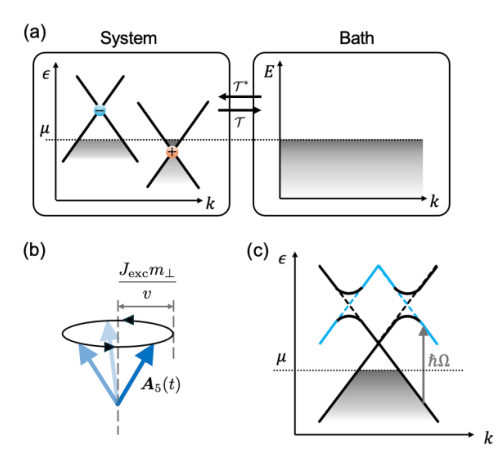
<figcaption class="paper-figure-caption"><b>Fig 1.</b> FIG. 1. Model of the driven MWSM. (a) Band structure of a MWSM lacking inversion (P) symmetry, indicating the dis- tinct chemical potentials of opposite chirality. The tunneling coefficient between the system and the bath is denoted by T . T ∗for the process from the bath to the system. (b) The effective chiral gauge field A5 induced as a perturbation.(c) The relevant Floquet band sector, highlighting the resonance between the one-photon-dressed valence band and the bare conduction band.</figcaption>
</figure>
<figure class="paper-figure-card">
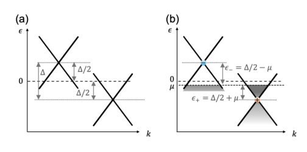
<figcaption class="paper-figure-caption"><b>Fig 2.</b> FIG. 2. Schematic illustration of the energy offset between Weyl nodes. (a) The energy splitting between the two Weyl nodes is denoted by ∆, with the nodes symmetrically dis- placed by ±∆/2 relative to the reference energy ϵ = 0. (b) Assuming the s = −1 Weyl node is located at a higher energy than the s = +1 Weyl node, the energy differences relative to the chemical potential µ are given by ϵ−= ∆/2 −µ for the s = −1 node and ϵ+ = −(∆/2+µ) for the s = +1 Weyl node. The gray areas indicate the occupied electronic states.</figcaption>
</figure>
<figure class="paper-figure-card">
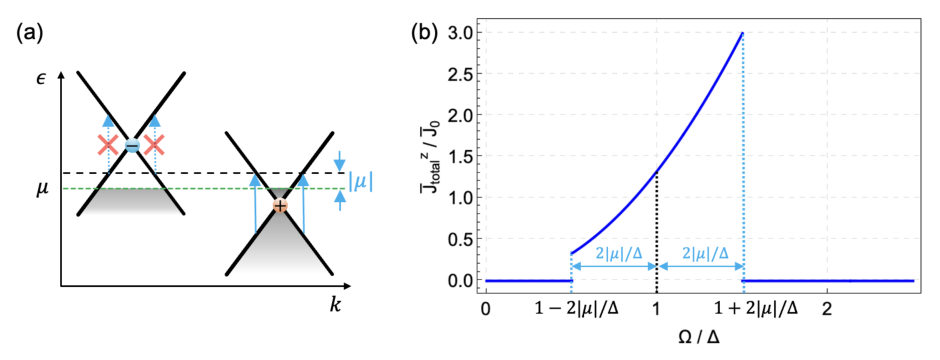
<figcaption class="paper-figure-caption"><b>Fig 3.</b> FIG. 3. Frequency dependence of the current induced by spin precession for the potential −∆/2 ≤µ ≤0. (a) Schematic of the interband transitions induced by spin precession at two Weyl nodes separated in energy by ∆. The gray regions represent occupied states, and the chemical potential lies a distance |µ| from the lower-energy s = +1 Weyl node. The blue arrows indicate drive-induced transitions. The transition at the s = +1 node is allowed, whereas that at the s = −1 node is forbidden by the emptiness of the initial state, as indicated by the red crosses. (b) Frequency dependence of the normalized total DC current ¯Jtotal/ ¯J0 generated by spin precession, where ¯J0 = ∆A2 5/(2π) and τ = 1.0....</figcaption>
</figure>
<figure class="paper-figure-card">
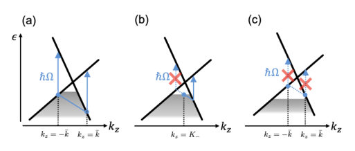
<figcaption class="paper-figure-caption"><b>Fig 4.</b> FIG. 4. Schematic illustrating the different cases for the lower integration bound. (a) When the resonant surface lies entirely below the chemical potential, the integration range begins at −¯k = max{−¯k, K−}. (b) When the chemical potential inter- sects the resonant surface, only the portion below the chemical potential contributes, restricting the lower integration bound to K−= max{−¯k, K−}. (c) When K−&gt; ¯k, the integration range completely collapses.</figcaption>
</figure>
<figure class="paper-figure-card">
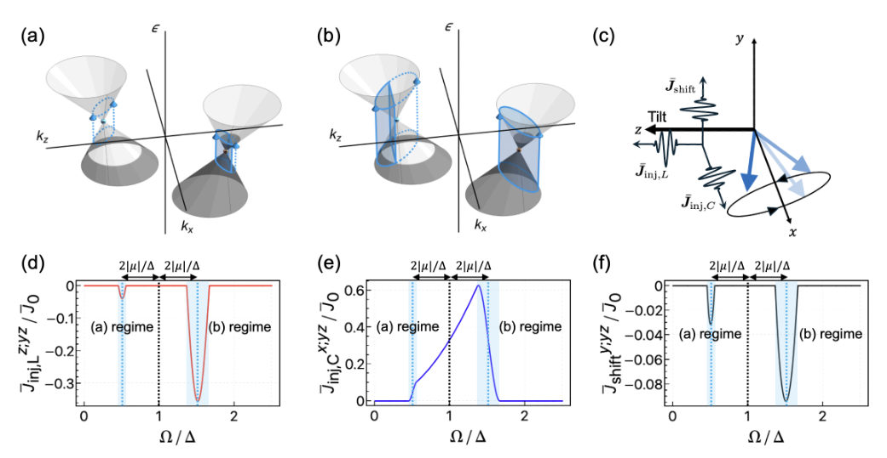
<figcaption class="paper-figure-caption"><b>Fig 5.</b> FIG. 5. Frequency dependence and directions of the dc currents induced by magnetization precession in the yz plane for a Weyl system with a z-directed tilt. (a) and (b) Schematics of the resonant interband transitions at the two Weyl nodes in the lower-frequency onset regime and the higher-frequency cancellation regime, respectively. The solid blue arrows represent Pauli-allowed transitions, whereas the dotted blue contours indicate the portions of the resonant surfaces excluded by Pauli blocking. The finite tilt makes the allowed transition phase space depend on kz. (c) Relative directions of the tilt, magnetization precession, and the induced currents. The linear injection current is...</figcaption>
</figure>
</div>

<p><strong>Summary.</strong> This work calculates the DC electric currents induced by rapid spin precession in magnetic Weyl semimetals using advanced Green's function techniques. The authors show that the current depends critically on the geometry of the Weyl nodes, and that introducing a tilt modifies the current structure, allowing for novel current components. This provides a theoretical framework for understanding spin-charge conversion in topological spintronics.</p>
<p><strong>Why it may be interesting.</strong> The use of the Keldysh formalism to calculate non-equilibrium currents driven by time-periodic fields is a powerful technique applicable to open quantum systems, providing insights into how external driving can induce persistent currents in topological materials.</p>
<details>
<summary>Detailed structure</summary>
<p><strong>Main problem.</strong> The paper theoretically investigates the DC electric currents generated by rapid, non-adiabatic spin precession in non-centrosymmetric magnetic Weyl semimetals (MWSMs).</p>
<p><strong>Main result.</strong> The induced current is decomposed into shift and injection components; the presence of a Weyl-cone tilt allows for new current types and ensures a finite net current even when summing opposite chiralities.</p>
<p><strong>Method.</strong> The study employs the Floquet–Keldysh Green’s-function formalism to handle the time-periodic Hamiltonian, calculating observables via Dyson equations.</p>
<p><strong>Model / system.</strong> The system is a non-centrosymmetric MWSM whose Hamiltonian is time-dependent due to magnetic precession. The analysis uses an effective two-level Floquet basis derived from the MWSM Hamiltonian.</p>
<p><strong>Key observables.</strong> DC electric current density ($ar{J}_{a;xy}$), decomposed into shift-current ($ar{J}^{	ext{shift}}$) and injection-current ($ar{J}^{	ext{inj}}$) contributions.</p>
<p><strong>Important parameters / regimes.</strong> Driving frequency ($\Omega$), relaxation time ($ au$), Weyl-cone tilt ($u$), and the energy offset ($\Delta$) between Weyl nodes.</p>
<p><strong>Assumptions / limitations.</strong> The analysis relies on the wide-band approximation and the Rotating-Wave Approximation (RWA) to simplify the Green's function calculations.</p>
<p><strong>Figures summary.</strong> Figures illustrate the MWSM band structure, the induced chiral gauge field, and the relevant Floquet band sectors, while subsequent figures detail frequency dependence.</p>
<p><strong>Paper structure.</strong> The paper builds from the general formalism using Floquet theory and Keldysh Green's functions, derives the current decomposition, and then analyzes specific limits, including the untilted and tilted Weyl semimetal cases, to calculate the various current components.</p>
</details>
<details>
<summary>Abstract</summary>
<p>We theoretically study dc electric currents induced by rapid spin precession in noncentrosymmetric magnetic Weyl semimetals using the Floquet--Keldysh Green's-function formalism. The spin dynamics act as a time-dependent chiral gauge field and the geometric structure of electric currents is expressed in terms of the Berry curvature, the quantum metric, and the shift vector. For an isotropic Weyl cone, only an injection current is generated. This current scales quadratically with the driving frequency and linearly with the relaxation time associated with coupling to a fermionic bath. We further show that a finite Weyl-cone tilt modifies the available interband-transition phase space, smooths the frequency dependence of the current, and allows for a shift current and another type of injection current, both of which flow in directions determined by the tilt and the direction of the precession. A finite net current can remain after summing contributions from Weyl nodes of opposite chiralities when their transition phase spaces are inequivalent.</p>
</details>
<p><sub><a href="#top">↑ back to top</a></sub></p>

<p><a id="paper-2610.23413"></a></p>
<h3 id="stability-and-nonlinear-dynamics-of-field-driven-extended-domain-walls-with-interfacial-dzyaloshinskii-moriya-interaction"><a href="http://arxiv.org/abs/2610.23413v1">Stability and Nonlinear Dynamics of Field-Driven Extended Domain Walls with Interfacial Dzyaloshinskii-Moriya Interaction</a></h3>
<p><strong>Authors:</strong> Enzo Fabrizio Pusiol, Alberto Rosso, Alejandro B. Kolton<br>
<strong>Type:</strong> theory · <strong>Category:</strong> other · <strong>PDF:</strong> <a href="https://arxiv.org/pdf/2610.23413v1">https://arxiv.org/pdf/2610.23413v1</a><br>
<strong>Analysis basis:</strong> full PDF text, analyzed in chunks
<strong>Topic relevance:</strong> <code>driven-dissipative phase transition</code> <strong>3/5</strong> · <code>non-equilibrium universality</code> <strong>3/5</strong> · <code>analog quantum simulation</code> <strong>2/5</strong> · <code>methods for driven-dissipative</code> <strong>2/5</strong> · <code>Frenkel-Kontorova</code> <strong>1/5</strong> · <code>Keldysh / 2PI / non-Gaussian methods</code> <strong>1/5</strong> · <code>scars &amp; prethermalization</code> <strong>1/5</strong></p>
<div class="figure-strip-hint">↔ Scroll figures horizontally</div>
<div class="paper-figures-scroll">
<figure class="paper-figure-card">
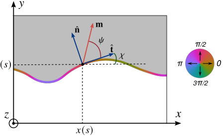
<figcaption class="paper-figure-caption"><b>Fig 1.</b> FIG. 1. Schematic of the extended DW interface. The white (gray) region denotes the +ˆ𝑧(−ˆ𝑧) domain. The interface is colored by the in-plane magnetization angle 𝜙measured from the 𝑥axis (colorwheel at right). At each point, ˆt and ˆn denote the local tangent and normal, 𝜒is the tangent’s angle from horizontal, and 𝜓is the angle between the magnetization m and ˆt.</figcaption>
</figure>
<figure class="paper-figure-card">
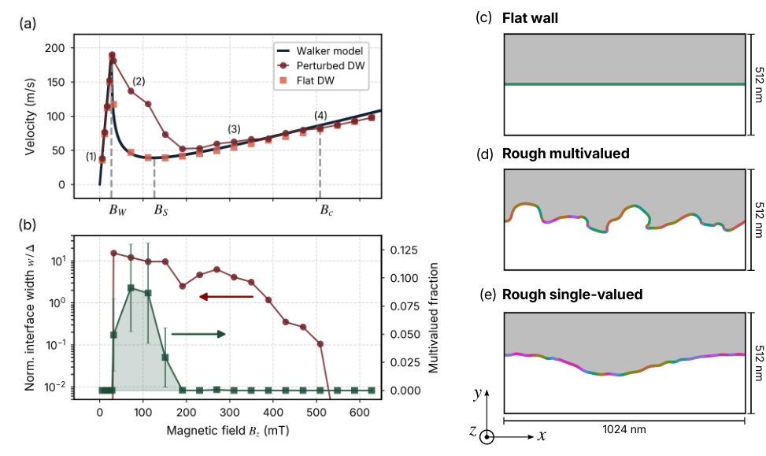
<figcaption class="paper-figure-caption"><b>Fig 2.</b> FIG. 2. Field-driven dynamics of an extended DW in the presence of DMI. (a) DW velocity as a function of the driving field 𝐵𝑧of a perturbed extended DW (red dots), compared with the prediction of the Walker model [solid line, Eq. (7)] and with micromagnetic simulations of an unperturbed flat DW (squares). (b) Normalized interface width 𝑤/Δ [Eq. (5), dots left axis] and multivalued fraction 𝑓𝑚[Eq. (6), squares right axis] as a function of 𝐵𝑧, quantifying the roughness and the degree of overhang proliferation of the DW, respectively. (c)–(e) Steady-state magnetic configurations at long times, for the points marked (1), (2), and (3) in panel (a), respectively, corresponding to the...</figcaption>
</figure>
<figure class="paper-figure-card">
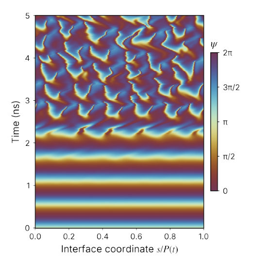
<figcaption class="paper-figure-caption"><b>Fig 3.</b> FIG. 4. Space-time transient evolution of the angle 𝜓between the local tangent and the DW magnetization, for the same driving field and time window as in Fig. 3.</figcaption>
</figure>
<figure class="paper-figure-card">
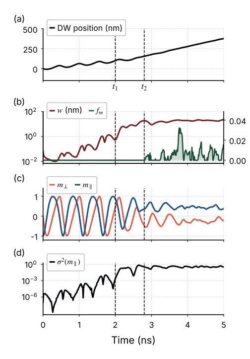
<figcaption class="paper-figure-caption"><b>Fig 4.</b> FIG. 3. Short-time transient dynamics of the DW in the corrugated phase, at the driving field 𝐵𝑧= 71.4 mT [point (2) in Fig. 2(a)]. (a) DW position 𝑢(𝑡). (b) Interface width 𝑤(𝑡) (left axis) and multivalued fraction 𝑓𝑚(𝑡) (right axis). (c) Parallel and perpendicular components of the magnetization measured from the local tangent. (d) Spatial variance of the parallel magnetization component, 𝜎2 ∥(𝑡).</figcaption>
</figure>
<figure class="paper-figure-card">
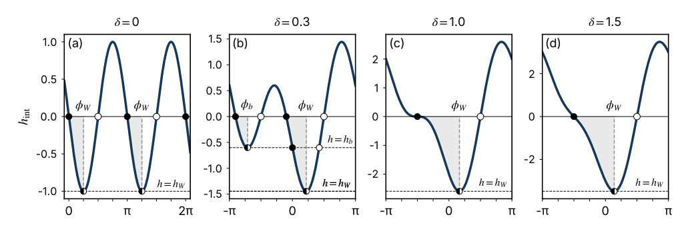
<figcaption class="paper-figure-caption"><b>Fig 5.</b> FIG. 5. Internal field ℎint(𝜙; 𝛿) for (a) 𝛿= 0, (b) 𝛿= 0.3, (c) 𝛿= 1, and (d) 𝛿= 1.5. Fixed points at applied field ℎare the intersections of ℎint with the line ℎint = −ℎ. Black (white) dots mark stable (unstable) fixed points; at ℎ= 0 these are the roots of ℎint. In every panel, the dashed line ℎ= ℎ𝑊is tangent to the global minimum of ℎint, located at 𝜙𝑊(half-filled dot). Shaded areas indicate the stable branches. In panel (b), we additionally mark the secondary minimum at 𝜙𝑏(half-filled dot), which defines the bifurcation curve ℎ𝑏(𝛿). Two stable fixed points coexist for ℎ&lt; ℎ𝑏. As 𝛿→1 (c), 𝜙𝑏merges with the stable root at an inflection point (ℎ𝑏→0), and for 𝛿&gt; 1 (d) only 𝜙𝑊remains.</figcaption>
</figure>
</div>

<p><strong>Summary.</strong> This work analyzes how extended magnetic domain walls behave under external fields when DMI is present. It predicts a transition from simple, predictable dynamics to a complex, chaotic regime at intermediate fields. The findings map out a comprehensive phase diagram detailing these distinct dynamical states.</p>
<p><strong>Why it may be interesting.</strong> The study of pattern formation and dynamic instabilities in magnetic systems provides analogies to complex dynamics seen in driven-dissipative quantum systems, particularly concerning phase transitions between ordered and chaotic states.</p>
<details>
<summary>Detailed structure</summary>
<p><strong>Main problem.</strong> The study investigates the stability and nonlinear dynamics of extended domain walls (DWs) subjected to an external magnetic field, incorporating the interfacial Dzyaloshinskii-Moriya Interaction (DMI).</p>
<p><strong>Main result.</strong> The system exhibits distinct dynamical regimes, transitioning from a rigid-wall Walker model to a non-trivial, spatio-temporally chaotic regime at intermediate fields, before re-stabilizing at high fields.</p>
<p><strong>Method.</strong> The analysis combines linear stability theory using Floquet analysis with numerical micromagnetic simulations solving the Landau-Lifshitz-Gilbert equation.</p>
<p><strong>Model / system.</strong> The system models extended domain walls in ultrathin magnetic heterostructures, governed by the LLG equation and an energy functional including Zeeman, exchange, magnetostatic, PMA, and DMI terms.</p>
<p><strong>Key observables.</strong> DW velocity, interface width, multivalued fraction, and the internal magnetization angle ($\phi$).</p>
<p><strong>Important parameters / regimes.</strong> External magnetic field ($B_z$ or $h$), DMI strength ($\delta$), and damping constant ($\alpha$).</p>
<p><strong>Assumptions / limitations.</strong> The initial analysis often assumes the 'clean limit' (no disorder/thermal fluctuations), and approximations include neglecting flexural degrees of freedom in certain regimes.</p>
<p><strong>Figures summary.</strong> Figures illustrate the schematic of the DW interface, the evolution of width and multivalued fraction across different field regimes, and the phase diagram mapping out stable and chaotic dynamical regimes.</p>
<p><strong>Paper structure.</strong> The paper progresses from establishing the governing equations and basic dynamics (Walker model) to performing linear stability analyses (Floquet theory) to map out the phase diagram, culminating in the description of the chaotic transition regime.</p>
</details>
<details>
<summary>Abstract</summary>
<p>We analyze the stability and non-linear dynamics of extended domain walls (DWs) with Dzyaloshinskii-Moriya interaction (DMI) driven by an external magnetic field in the clean limit (i.e., in the absence of disorder and thermal fluctuations). We show that for moderate DMI strengths, the dynamics in both the low- and high-field regimes are accurately described by a rigid-wall Walker model that neglects flexural degrees of freedom. At intermediate fields, however, the system undergoes a transition into a non-trivial spatio-temporally chaotic regime characterized by dynamically roughened domain walls displaying single- or multi-valued profiles. The phase boundaries delimiting this regime in the magnetic field-DMI phase space are computed using a linear stability analysis based on Floquet theory applied to the extended domain wall, explicitly accounting for DMI and internal phase dynamics. Our theoretical analysis and predicted phase diagram are fully supported by numerical micromagnetic simulations solving the full Landau-Lifshitz-Gilbert equation.</p>
</details>
<p><sub><a href="#top">↑ back to top</a></sub></p>

<p><a id="paper-2610.23763"></a></p>
<h3 id="limits-from-nonlinear-loss-of-spin-orbit-torque-control-of-magnon-transport"><a href="http://arxiv.org/abs/2610.23763v1">Limits from nonlinear loss of spin-orbit-torque control of magnon transport</a></h3>
<p><strong>Authors:</strong> Lerato Takana, Katya Mikhailova, Charles Zheng, Sauviz Alaei, Xiangcheng Liu, Junwei Tong, Kwangyul Hu, Michael Flatté, Xiaoqin Li, Yuri Suzuki<br>
<strong>Type:</strong> both · <strong>Category:</strong> other · <strong>PDF:</strong> <a href="https://arxiv.org/pdf/2610.23763v1">https://arxiv.org/pdf/2610.23763v1</a><br>
<strong>Analysis basis:</strong> full PDF text, analyzed in chunks
<strong>Topic relevance:</strong> <code>driven-dissipative phase transition</code> <strong>3/5</strong> · <code>correlated / nonlocal dissipation</code> <strong>1/5</strong> · <code>methods for driven-dissipative</code> <strong>1/5</strong> · <code>non-equilibrium universality</code> <strong>1/5</strong></p>
<div class="figure-strip-hint">↔ Scroll figures horizontally</div>
<div class="paper-figures-scroll">
<figure class="paper-figure-card">
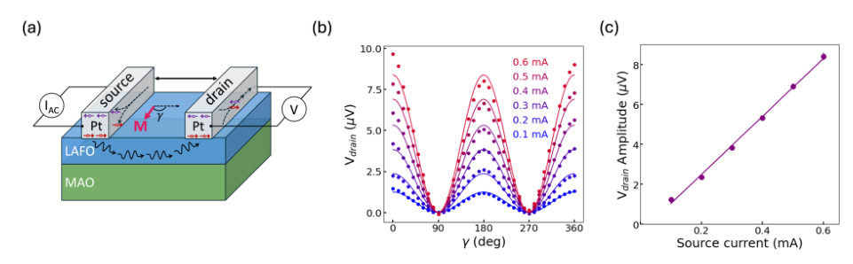
<figcaption class="paper-figure-caption"><b>Fig 1.</b> Figure 1: Nonlocal measurements of a two-terminal device showing magnon cur- rent generation. (a) Schematic of the nonlocal measurement geometry. An ac current (f = 9.8 Hz) is applied to the Pt source, while the first-harmonic voltage is measured at the Pt drain using a lock-in amplifier. The source and drain are separated by an edge-to-edge distance of (d = 300 nm). Pt nanowires are 4 nm thick, 300 nm wide and 40 µm long. An in-plane magnetic field of µ0H = 80 mT is applied to saturate the magnetization. Measure- ments were performed at 300 K. (b) Angular dependence of the first-harmonic drain voltage measured at different ac source currents. The in-plane angle, γ, is defined as the angle...</figcaption>
</figure>
<figure class="paper-figure-card">
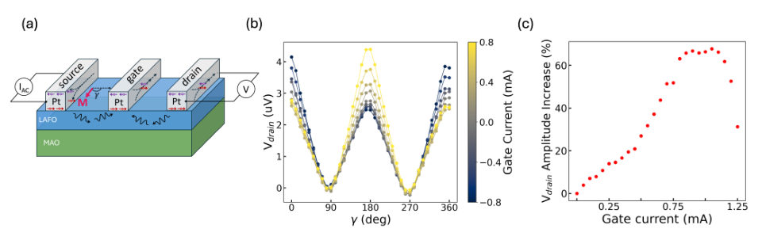
<figcaption class="paper-figure-caption"><b>Fig 2.</b> Figure 2: Nonlocal measurements of a three-terminal device for magnon current control. (a) Schematic of the three-terminal nonlocal device used for magnon control in Li0.5Al1.0Fe1.5O4. Three Pt nanowires (4 nm thick, 300 nm wide, and 40 µm long) are separated by an edge-to-edge distance of 300nm. With an ac current (f = 9.8 Hz) applied to the source and a dc current applied to the gate, the first-harmonic nonlocal voltage is measured at the drain using a lock-in amplifier. An in-plane magnetic field of µ0H = 80 mT saturates the magnetization. All measurements were performed at 300 K. (b) Angular dependence of the first-harmonic non-local voltage for different dc gate currents at a fixed IAC...</figcaption>
</figure>
<figure class="paper-figure-card">
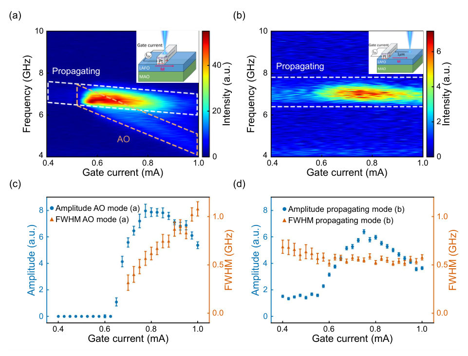
<figcaption class="paper-figure-caption"><b>Fig 3.</b> Figure 3: Brillouin Light Scattering measurements on a Pt/LAFO bilayer. (a) BLS spectra measured with the laser spot positioned on top of the Pt bar under DC currents ranging from 0.4 to 1.0 mA in 0.025 mA increments. (b) Same as (a) but measured 1 µm from the Pt bar. (c) Current dependence of the fitted amplitude and full width at half maximum (FWHM) linewidth of the auto-oscillation mode extracted from the spectra in (a). (d) Current dependence of the fitted amplitude and full width at half maximum (FWHM) linewidth of the propagating magnon mode extracted from the spectral map in (b).</figcaption>
</figure>
<figure class="paper-figure-card">
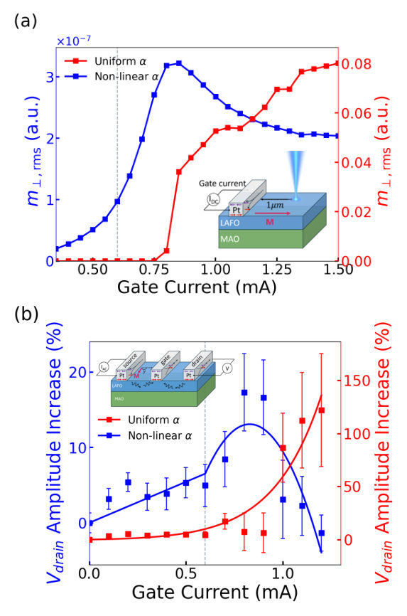
<figcaption class="paper-figure-caption"><b>Fig 4.</b> Figure 4: Micromagnetic simulations of the nonlocal and BLS measurements. Simulated (a) m⊥,rms of the propagating magnons and (b) Vdrain amplitude increase as functions of the DC gate current (Ig) for the current independent damping (Uniform α, red) and the phenomenological current-dependent damping (Non-linear α, blue). The gray dashed line marks the threshold current, Ith = 0.6 mA. The solid lines in (a) are a guide to the eye and (b) red and blue are fits to an exponential function and two piecewise functions with linear and quadratic terms, respectively.</figcaption>
</figure>
</div>

<p><strong>Summary.</strong> This paper investigates the limits of magnon current control in magnonic devices using SOT control in LAFO films. By combining nonlocal transport measurements, BLS microscopy, and micromagnetic simulations, the authors demonstrate that the signal saturation and subsequent drop are caused by nonlinear damping. This damping is attributed to the onset of localized auto-oscillations, establishing a new understanding of the fundamental bottleneck in magnon modulation.</p>
<p><strong>Why it may be interesting.</strong> The work provides a concrete example of how nonlinear dynamics (auto-oscillations) can fundamentally limit the control parameters in solid-state spintronic devices, offering insights into energy dissipation mechanisms beyond simple linear damping.</p>
<details>
<summary>Detailed structure</summary>
<p><strong>Main problem.</strong> The study investigates the fundamental physical mechanisms that limit the ability to control magnon currents in magnonic devices using spin-orbit torque (SOT). Specifically, it aims to distinguish between simple spin injection saturation and nonlinear damping as the limiting factor.</p>
<p><strong>Main result.</strong> The nonmonotonic gate response of the magnon signal is limited by nonlinear damping arising from the emergence of an SOT-driven auto-oscillation mode. This nonlinear loss, rather than spin injection saturation, dictates the maximum achievable magnon modulation.</p>
<p><strong>Method.</strong> The research combines nonlocal transport measurements and Brillouin light scattering (BLS) microscopy with micromagnetic simulations. The simulations are crucial for modeling the non-linear dynamics by incorporating an amplitude-dependent effective damping term.</p>
<p><strong>Model / system.</strong> The platform is a three-terminal nonlocal device fabricated using low-damping lithium aluminum ferrite (LAFO) thin films, controlled by a Platinum (Pt) gate via SOT. The physics involves the dynamics of magnon excitations and the onset of auto-oscillations.</p>
<p><strong>Key observables.</strong> Nonlocal drain voltage (showing nonmonotonic dependence on gate current), magnon frequency measured by BLS (showing redshift), and the effective magnon damping coefficient.</p>
<p><strong>Important parameters / regimes.</strong> Critical gate current density (I_c) where the signal turns over, and the parameters governing the amplitude-dependent effective damping ($\alpha_{	ext{eff}}$).</p>
<p><strong>Assumptions / limitations.</strong> The analysis assumes that the observed turnover is due to nonlinear damping associated with auto-oscillations, and the simulations use a phenomenological, current-dependent damping term to model these losses.</p>
<p><strong>Figures summary.</strong> Figures show nonlocal voltage measurements demonstrating nonmonotonic behavior vs. gate current, BLS spectra revealing the emergence of a localized auto-oscillation mode, and simulation results comparing non-linear vs. linear damping models.</p>
<p><strong>Paper structure.</strong> The paper first presents the experimental observations of the nonmonotonic gate response using nonlocal measurements and BLS. It then uses micromagnetic simulations, incorporating amplitude-dependent damping, to reproduce this non-monotonicity, concluding that nonlinear losses are the bottleneck.</p>
</details>
<details>
<summary>Abstract</summary>
<p>Controlling magnon currents is central to the development of magnonic devices, which exploit spin excitations for information transport without charge flow. Here, we use the spin-orbit torque (SOT) from a Pt gate to control the effective magnon damping in three-terminal devices fabricated from low-damping lithium aluminum ferrite (LAFO) thin films and identify the nonlinear damping that ultimately limits the gate response. With increasing gate current, the nonlocal magnon signal initially increases, but saturates and subsequently decreases above a critical gate current density. Brillouin light scattering microscopy reveals that this turnover coincides with the emergence of an SOT-driven auto-oscillation mode localized beneath the gate, whose frequency continuously redshifts with increasing gate current, characteristic of large-amplitude nonlinear dynamics, and with a suppression of the propagating magnon population away from the gate. Micromagnetic simulations reproduce the observed nonmonotonic gate response only when an amplitude-dependent effective damping is included, indicating that nonlinear losses, rather than saturation of spin injection, limit the degree of magnon modulation. Our results show that SOT compensation of magnon damping is ultimately limited by nonlinear damping attributed to auto-oscillations, providing a framework for understanding the limits of magnon current modulation in magnetic insulators.</p>
</details>
<p><sub><a href="#top">↑ back to top</a></sub></p>

<p><a id="paper-2610.22510"></a></p>
<h3 id="magnetic-flux-ring-splitting-near-a-navier-stokes-singularity"><a href="http://arxiv.org/abs/2610.22510v1">Magnetic flux ring splitting near a Navier-Stokes singularity</a></h3>
<p><strong>Authors:</strong> Antti J. Niemi<br>
<strong>Type:</strong> theory · <strong>Category:</strong> other · <strong>PDF:</strong> <a href="https://arxiv.org/pdf/2610.22510v1">https://arxiv.org/pdf/2610.22510v1</a><br>
<strong>Analysis basis:</strong> full PDF text, analyzed in chunks
<strong>Topic relevance:</strong> <code>non-equilibrium universality</code> <strong>3/5</strong> · <code>analog quantum simulation</code> <strong>1/5</strong> · <code>driven-dissipative phase transition</code> <strong>1/5</strong> · <code>scars &amp; prethermalization</code> <strong>1/5</strong></p>
<div class="figure-strip-hint">↔ Scroll figures horizontally</div>
<div class="paper-figures-scroll">
<figure class="paper-figure-card">
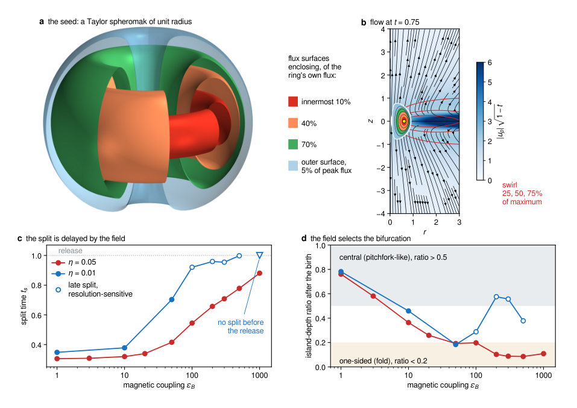
<figcaption class="paper-figure-caption"><b>Fig 1.</b> FIG. 1. The torus, the collapse flow and the splitting. Panel a, the initial torus, a Taylor spheromak of unit radius, in the colour code of every ring in this work: flux surfaces enclosing 10, 40 and 70% of the ring’s poloidal flux (red, orange, green) and the outer surface at 5% of the peak flux (blue), revolved about the axis and cut open. Panel b, the imposed flow at t = 0.75: speed of the meridional flow times √1−t (blue), streamlines (black), swirl at 25, 50 and 75% of its maximum (red) and the initial torus as in Panel a, with flux contours and its magnetic axis (gold). Fluid is drawn in along the midplane and expelled along the axis inside a column contracting like √1−t. Panel c,...</figcaption>
</figure>
<figure class="paper-figure-card">
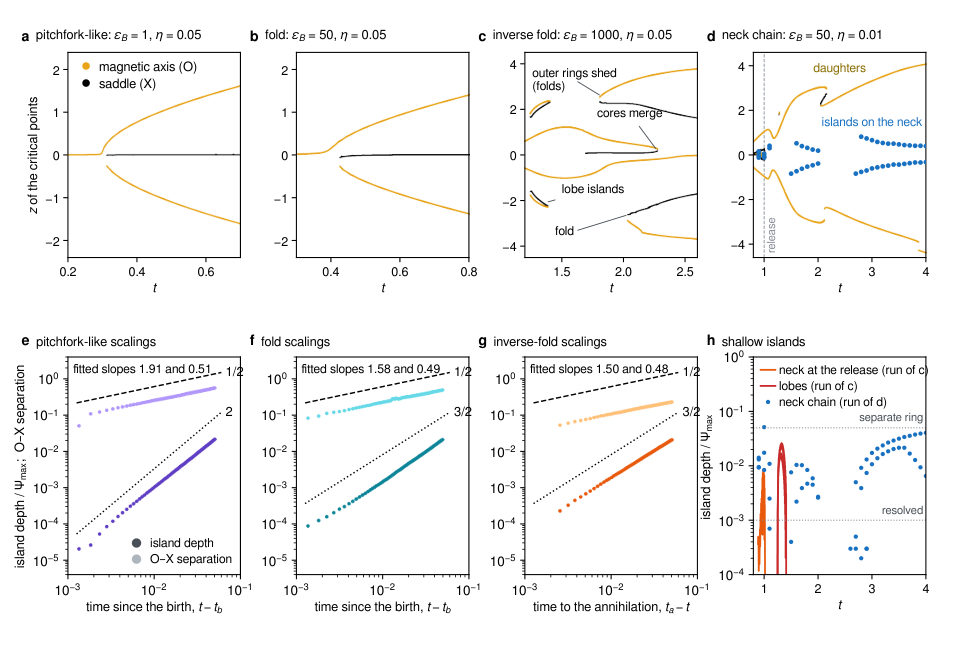
<figcaption class="paper-figure-caption"><b>Fig 2.</b> FIG. 2. Splitting, merging and shallow islands on the flux ridge. World lines of the resolved magnetic axes (gold) and saddles (black) along the flux ridge, and the normal-form scalings of the same events. Panel a, pitchfork-like split at εB = 1, η = 0.05. The original axis moves slightly off z = 0 while a saddle and a second, nearly equal axis appear beside it. Panel b, fold at εB = 50, η = 0.05. The saddle and the new axis are born together off the stagnation plane, and the new island is born much shallower. Panel c, inverse fold at εB = 1000, η = 0.05, after the release. Shallow islands form on the lobes of both daughters at 1.25 &lt; t &lt; 1.41, the daughters shed outer rings in folds at t =...</figcaption>
</figure>
<figure class="paper-figure-card">
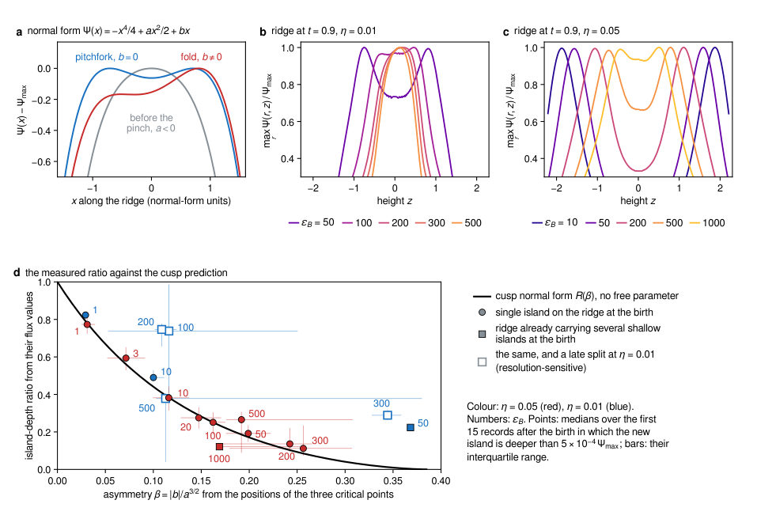
<figcaption class="paper-figure-caption"><b>Fig 3.</b> FIG. 3. The cusp description and its test for single-island splits. Panel a, the flux along the ridge near the pinch in the normal form −x4/4+ax2/2+bx, before the pinch (a &lt; 0, grey), at the symmetric pinch (b = 0, blue), a pitchfork, and at the asymmetric pinch (b ̸= 0, red), a fold. Panel b, the measured ridge profile at t = 0.9 for η = 0.01. At εB = 50 the torus split at t = 0.70. At εB = 200–500 it has been compressed into a flat sheet, symmetric to within 1–2% about its centre, that pinches centrally at ts ≈0.96–1.0. Panel c, the same for η = 0.05. The splits are earlier and one-sided, and no flat sheet forms, except at εB = 1000, where the top is broad and slightly hollow when it...</figcaption>
</figure>
<figure class="paper-figure-card">
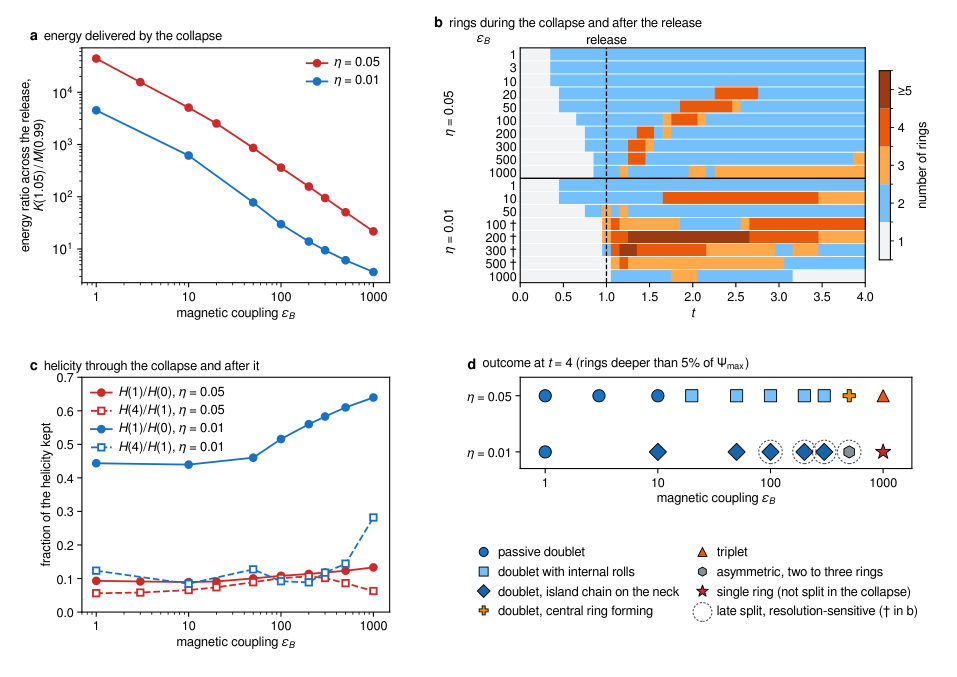
<figcaption class="paper-figure-caption"><b>Fig 4.</b> FIG. 4. Regimes after the release. Panel a, the energy ratio across the release, the kinetic energy K of the released flow at t = 1.05 divided by the magnetic energy M just before the release, at t = 0.99, against the magnetic coupling εB. It spans four decades, from 4×104 at εB = 1, η = 0.05 to 4 at εB = 1000, η = 0.01. Panel b, number of rings against time for all eighteen runs, counting the main ring and every secondary flux maximum deeper than 5% of Ψmax. The triplet forms at t ≈2.3 for εB = 1000, η = 0.05, and the central ring begins to form at t ≈3.9 for εB = 500. Daggers mark the late splits at η = 0.01, whose timing and symmetry are resolution-sensitive (Methods). Panel c, helicity...</figcaption>
</figure>
<figure class="paper-figure-card">
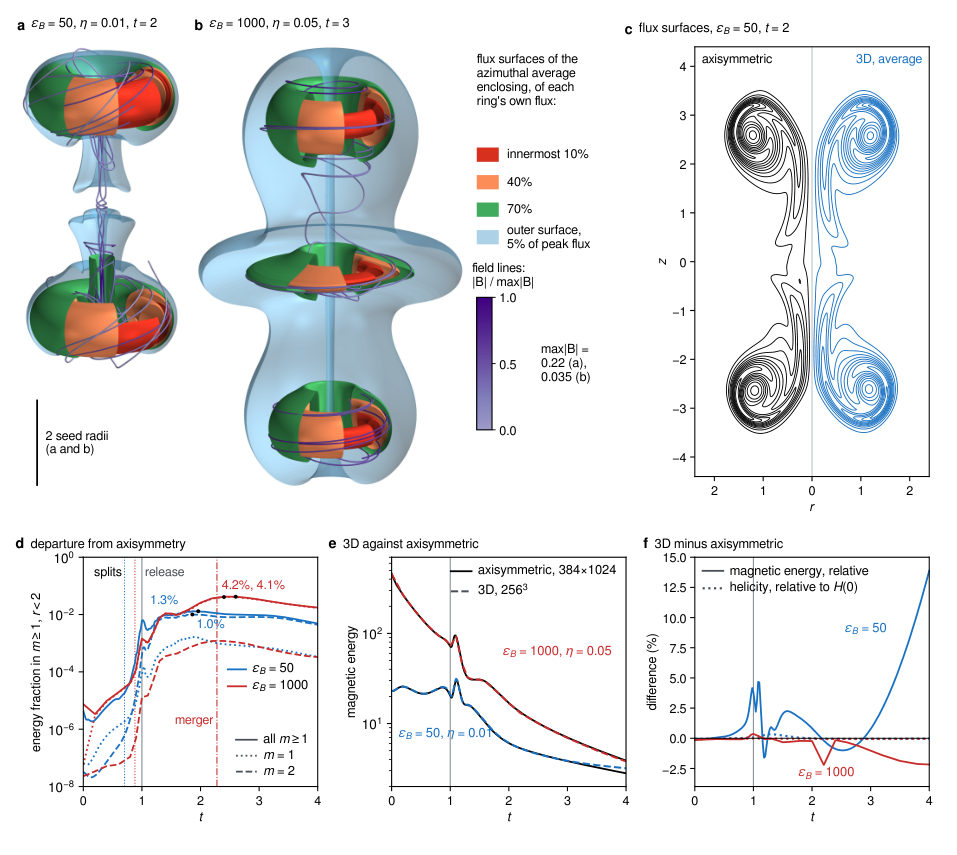
<figcaption class="paper-figure-caption"><b>Fig 5.</b> FIG. 5. Three dimensions. Two cases of the scan repeated in a 2563 Cartesian simulation with a random solenoidal magnetic perturbation of relative amplitude 10−3 added to the seed. Panel a, εB = 50, η = 0.01 at t = 2: the two daughters of the fold and the neck between them. Panel b, εB = 1000, η = 0.05 at t = 3: the triplet, two compact tori and the flat equatorial ring formed by the merger of the daughters’ cores. In Panels a and b, drawn to the same scale, the surfaces are flux surfaces of the azimuthally averaged field in the colour code of Fig. 1a, applied to each ring’s own flux, revolved about the axis and cut open. The field lines (purple, shaded by |B| relative to its maximum in the...</figcaption>
</figure>
</div>

<p><strong>Summary.</strong> This work simulates magnetic flux rings near a fluid singularity to understand how magnetic reconnection restructures the field. By analyzing the system's evolution after the imposed collapse force is removed, the authors show that the magnetic field dictates whether the ring splits symmetrically (pitchfork) or asymmetrically (fold). This confirms that approaching hydrodynamic blow-up can trigger significant magnetic restructuring.</p>
<p><strong>Why it may be interesting.</strong> While focused on classical fluid dynamics, the study of singularities, energy cascades, and non-linear pattern formation (like bifurcations) shares mathematical parallels with critical phenomena studied in quantum many-body systems.</p>
<details>
<summary>Detailed structure</summary>
<p><strong>Main problem.</strong> The paper investigates the physical consequences of a forced Navier-Stokes flow that develops a finite-time singularity, using magnetic flux splitting and merging as a diagnostic tool.</p>
<p><strong>Main result.</strong> Magnetic reconnection events, triggered by the approach to hydrodynamic blow-up, cause the magnetic flux ring to split into daughter rings, with the specific bifurcation type (pitchfork vs. fold) being selected by the Lorentz force feedback.</p>
<p><strong>Method.</strong> The study employs resistive magnetohydrodynamics (MHD) simulations, analyzing the dynamics near critical points using the cusp catastrophe normal form.</p>
<p><strong>Model / system.</strong> The system models a magnetic flux ring (initially a Taylor spheromak) evolving under the influence of an imposed, regularized fluid flow that mimics a collapsing core, governed by resistive MHD equations.</p>
<p><strong>Key observables.</strong> Magnetic flux splitting/merging, bifurcations of the poloidal flux function, asymmetry parameter ($eta$), and energy/helicity budgets.</p>
<p><strong>Important parameters / regimes.</strong> Magnetic diffusivity ($\eta$), magnetic coupling ($\epsilon_B$), and the Lundquist number.</p>
<p><strong>Assumptions / limitations.</strong> The analysis relies on modeling the local dynamics near the pinch using the cusp catastrophe normal form, and the 'release' phase is treated as a model choice.</p>
<p><strong>Figures summary.</strong> Figures illustrate the initial torus, the imposed flow, the dependence of split time on parameters, and diagrams comparing pitchfork and fold splitting mechanisms.</p>
<p><strong>Paper structure.</strong> The paper progresses by setting up the MHD model, simulating the collapse and subsequent 'release,' analyzing the resulting magnetic bifurcations using the cusp catastrophe, and finally performing energy/helicity budget checks on the free evolution.</p>
</details>
<details>
<summary>Abstract</summary>
<p>OpenAI reports a forced Navier-Stokes flow that becomes singular in finite time, raising the question of its physical consequences. Magnetic reconnection offers a test through the splitting and merging of flux structures. We use resistive magnetohydrodynamics to simulate a magnetic ring driven by an imposed, regularized flow that reproduces the geometry and scaling of the collapsing core. At the nominal singular time, we remove the imposed drive and allow the system to evolve freely. Reconnections before and after release split the ring into two or more daughter rings through bifurcations of the poloidal flux function, with Lorentz feedback selecting the bifurcation type. Unequal winding by the swirl above and below the midplane produces asymmetric toroidal magnetic stresses, unfolding the kinematic pitchfork-like transition into a fold. For single-island splits, the cusp normal form predicts the asymmetry of the daughter rings without adjustable parameters. Three-dimensional simulations retain the splits and merger, confirming that approach to hydrodynamic blow-up can trigger magnetic restructuring.</p>
</details>
<p><sub><a href="#top">↑ back to top</a></sub></p>

<p><a id="paper-2610.23300"></a></p>
<h3 id="topological-edge-and-domain-wall-phonons-in-the-mass-dimerized-diatomic-chain-complex-band-structure-zak-phase-and-spectral-unfolding"><a href="http://arxiv.org/abs/2610.23300v1">Topological edge and domain-wall phonons in the mass-dimerized diatomic chain: complex band structure, Zak phase, and spectral unfolding</a></h3>
<p><strong>Authors:</strong> Vincent Meunier<br>
<strong>Type:</strong> theory · <strong>Category:</strong> other · <strong>PDF:</strong> <a href="https://arxiv.org/pdf/2610.23300v1">https://arxiv.org/pdf/2610.23300v1</a><br>
<strong>Analysis basis:</strong> full PDF text, analyzed in chunks
<strong>Topic relevance:</strong> <code>Frenkel-Kontorova</code> <strong>3/5</strong> · <code>analog quantum simulation</code> <strong>2/5</strong></p>
<div class="figure-strip-hint">↔ Scroll figures horizontally</div>
<div class="paper-figures-scroll">
<figure class="paper-figure-card">
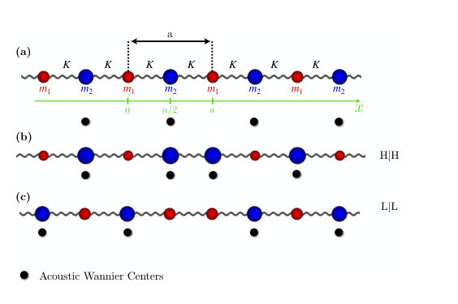
<figcaption class="paper-figure-caption"><b>Fig 1.</b> Figure 1. (a) Sketch of a mass-dimerized diatomic 1D chain with constant spring constant K and with alternating masses m1 and m2. When the two masses are different, this system is an example of an SSH-type phononic model even though K is uniform (see Sec. III A). The lattice constant is a and the interatomic distance is a/2. (b)-(c) The two sharp domain walls between opposite mass orderings: heavy|heavy (H|H) and light|light (L|L). The black dots mark the acoustic Wan- nier centers, which sit on the heavier masses and shift by a/2 across each wall (Sec. III C). The optical Wannier centers (not shown) sit on the lighter masses and shift by a/2 in the same way; only the acoustic centers...</figcaption>
</figure>
<figure class="paper-figure-card">
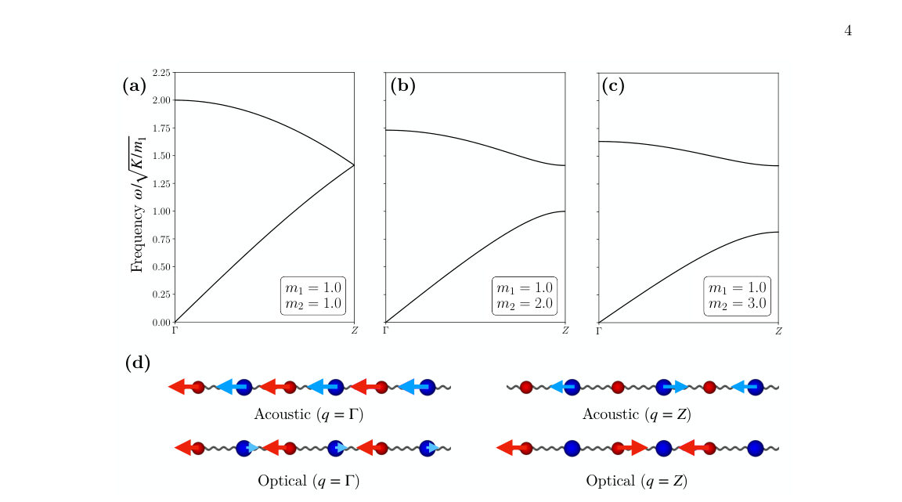
<figcaption class="paper-figure-caption"><b>Fig 2.</b> Figure 2. Phonon band structure for a 1D mass-dimerized diatomic chain with different values for the masses and identical spring constants, with frequencies in units of p</figcaption>
</figure>
<figure class="paper-figure-card">
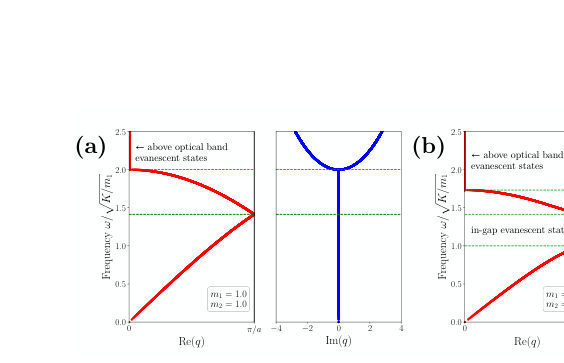
<figcaption class="paper-figure-caption"><b>Fig 3.</b> Figure 3. Complex band structure for the mass-dimerized 1D chain, with frequencies in units of p</figcaption>
</figure>
<figure class="paper-figure-card">
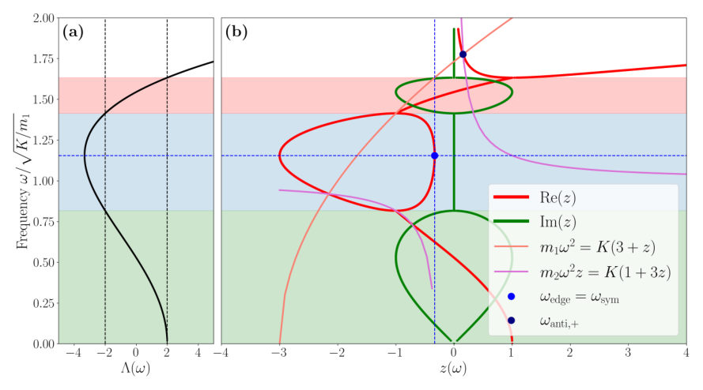
<figcaption class="paper-figure-caption"><b>Fig 4.</b> Figure 4. (a) The function Λ(ω) of Eq. (28); dashed lines mark Λ = ±2, which separate propagating (|Λ| &lt; 2) from evanescent solutions. (b) Real (red) and imaginary (green) parts of the Bloch factors z±(ω) of Eq. (29). Frequencies are in units of p</figcaption>
</figure>
<figure class="paper-figure-card">
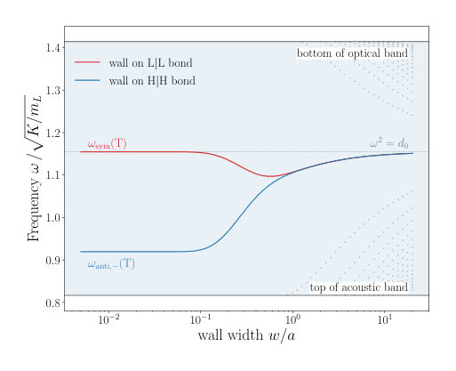
<figcaption class="paper-figure-caption"><b>Fig 5.</b> Figure 5. Adiabatic sharpening of a domain wall between the two mass orderings, using the smooth profile of Eq. (90) with K = 1, mL = 1, and mH = 3 (802 masses, with heavy masses at both ends so that no end modes appear). The in-gap mode localized at the wall is followed as the width w decreases. For wide walls it sits close to ω2 = d0 (dotted line), the value predicted by the long-wavelength Dirac equation, Eq. (91). As w →0 the mode stays inside the gap (shaded) and evolves continuously into ωsym for a wall centered on the bond that becomes the L|L spring (red), and into ωanti,−for a wall centered on the bond that becomes the H|H spring (blue). The mode never leaves the gap, while its...</figcaption>
</figure>
</div>

<p><strong>Summary.</strong> This paper analytically investigates the vibrational modes of a mass-dimerized diatomic chain, treating it as a phononic analogue to topological insulators. By analyzing the complex band structure and calculating the Zak phase, the authors rigorously classify localized modes at free ends and domain walls. This work establishes a clear link between bulk topology and the existence of gap states in mechanical systems.</p>
<p><strong>Why it may be interesting.</strong> The rigorous application of topological invariants (Zak phase) to mechanical lattice vibrations provides a powerful analogy to electronic band theory, offering new insights into how geometry dictates vibrational modes.</p>
<details>
<summary>Detailed structure</summary>
<p><strong>Main problem.</strong> To provide a unified analytical treatment for the bulk topology, complex band structure, and the full spectrum of localized modes (edge and domain-wall) in a mass-dimerized diatomic chain.</p>
<p><strong>Main result.</strong> The analysis yields closed-form frequencies and decay lengths for all localized modes, distinguishing between modes protected by bulk topology (via the Zak phase) and those set by local geometry.</p>
<p><strong>Method.</strong> The authors use complex band structure analysis, matching evanescent Bloch waves directly to force balance conditions at boundaries, and employing the Zak phase to quantify topological invariants.</p>
<p><strong>Model / system.</strong> The system is a one-dimensional diatomic chain with alternating masses (mass-dimerized), modeled as an SSH-type phononic system where dimerization is introduced via mass contrast.</p>
<p><strong>Key observables.</strong> Phonon dispersion relation ($\omega^2_{\pm}(q)$), Zak phase ($\gamma_{\pm}$), Wannier center position, and localized mode frequencies.</p>
<p><strong>Important parameters / regimes.</strong> Mass ratio ($m_2/m_1$), spring constant ($K$), and the dimerization strength ($\delta$ or $\lambda$).</p>
<p><strong>Assumptions / limitations.</strong> The analysis relies on the validity of matching evanescent Bloch waves to force balance conditions and assumes the presence of inversion symmetry for Zak phase quantization.</p>
<p><strong>Figures summary.</strong> Figures illustrate the phonon band structure for varying mass ratios and show the localized antisymmetric states at domain walls (H|H and L|L) as a function of interfacial spring strength ($\lambda$).</p>
<p><strong>Paper structure.</strong> The paper progresses from deriving the general dispersion relation to analyzing the topological invariants (Zak phase) that characterize the bulk, and finally contrasts symmetry-protected modes with topologically-protected modes at interfaces.</p>
</details>
<details>
<summary>Abstract</summary>
<p>The one-dimensional chain with alternating masses is the simplest mechanical system with a topological band structure. We give a fully analytical account of its localized vibrations built on the complex band structure. The evanescent Bloch waves available at each frequency are matched directly to force balance at a free end or a domain wall, without transfer matrices, which yields closed-form frequencies and decay lengths for every localized mode. The free-end mode sits at a branch point of the complex band structure, where the acoustic and optical sheets join and the decay is fastest. For uniform springs, a sharp wall between the two mass orderings hosts one in-gap mode, symmetric at the light$\mid$light wall and antisymmetric at the heavy$\mid$heavy wall, and an adiabatic construction shows that these are the same topological mode; the light$\mid$light wall also binds a non-topological mode above the optical branch. Spectral unfolding makes this classification visible in momentum space: the sign of the Bloch factor sets the zone-center or zone-boundary character of each mode, and its magnitude sets the width. The Zak phase, quantized by inversion, identifies the modes of topological origin and fixes a half-integer mode count per band at a wall, while the chiral symmetry known to be hidden in strain coordinates explains which frequencies are pinned.</p>
</details>
<p><sub><a href="#top">↑ back to top</a></sub></p>

<p><a id="paper-2610.23358"></a></p>
<h3 id="kinematics-of-inverse-compton-scattering-from-dirac-carriers-in-graphene"><a href="http://arxiv.org/abs/2610.23358v1">Kinematics of Inverse Compton Scattering from Dirac Carriers in Graphene</a></h3>
<p><strong>Authors:</strong> Dar Faheem Ul Haq, Naveed Ahmad Shah, SSZ Ashraf<br>
<strong>Type:</strong> both · <strong>Category:</strong> other · <strong>PDF:</strong> <a href="https://arxiv.org/pdf/2610.23358v1">https://arxiv.org/pdf/2610.23358v1</a><br>
<strong>Analysis basis:</strong> full PDF text, analyzed in chunks
<strong>Topic relevance:</strong> <code>analog quantum simulation</code> <strong>2/5</strong> · <code>Keldysh / 2PI / non-Gaussian methods</code> <strong>1/5</strong> · <code>interference shaping light</code> <strong>1/5</strong> · <code>quantum measurements</code> <strong>1/5</strong> · <code>quantum optics experiment</code> <strong>1/5</strong></p>
<div class="figure-strip-hint">↔ Scroll figures horizontally</div>
<div class="paper-figures-scroll">
<figure class="paper-figure-card">
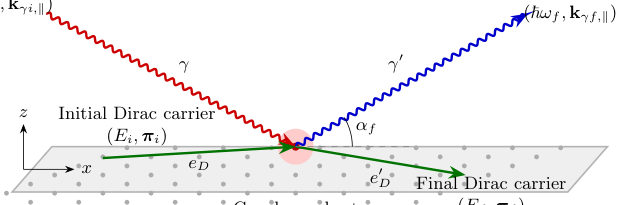
<figcaption class="paper-figure-caption"><b>Fig 1.</b> Figure 1: Schematic ray diagram of photon scattering by Dirac carriers in graphene. For the proposed inverse-Compton channel, ωf &gt; ωi and Ef &lt; Ei, subject to energy and in-plane momentum conservation. The angle αf shown in the diagram is measured from the indicated in-plane reference direction. The diagram is schematic and not to scale.</figcaption>
</figure>
<figure class="paper-figure-card">
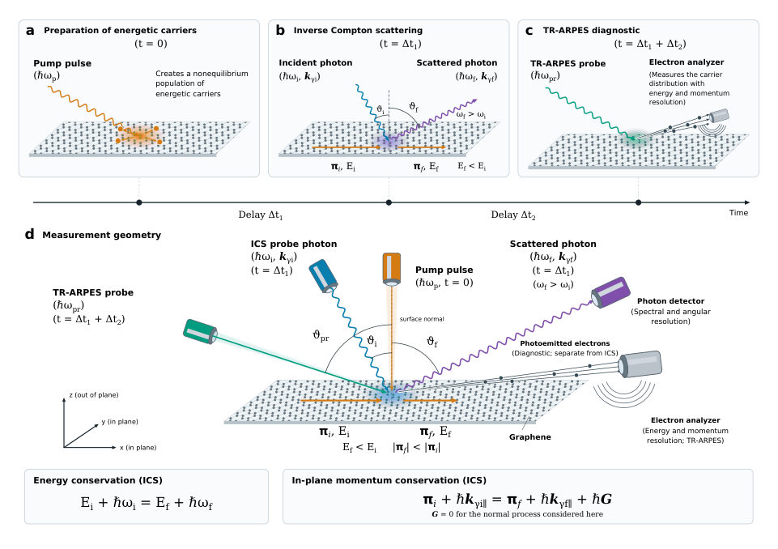
<figcaption class="paper-figure-caption"><b>Fig 2.</b> Figure 2: Proposed time-resolved geometry for inverse Compton scattering (ICS) in graphene and the in- dependent diagnosis of the transient carrier distribution using time-resolved angle-resolved photoemission spectroscopy (TR-ARPES). (a) Preparation of energetic carriers: an ultrafast pump pulse of energy ℏωp excites graphene at t = 0, creating a nonequilibrium carrier population. (b) Inverse Compton scattering: at t = ∆t1, an incident photon of energy ℏωi and wave vector kγi interacts with the carriers, producing a scattered photon of energy ℏωf and wave vector kγf, with ωf &gt; ωi and Ef &lt; Ei. (c) TR-ARPES diagnostic: at t = ∆t1 + ∆t2, a separate probe pulse of energy ℏωpr photoemits...</figcaption>
</figure>
</div>

<p><strong>Summary.</strong> This paper develops a kinematic framework to analyze Inverse Compton Scattering from Dirac carriers in graphene, recognizing that the low Fermi velocity ($v_F$) invalidates simple substitutions into standard scattering formulas. The main result is a derived quadratic equation governing the scattered photon energy, which is proposed to be measured using a time-resolved pump-probe setup coupled with TR-ARPES diagnostics.</p>
<p><strong>Why it may be interesting.</strong> This work is relevant to quantum optics and open quantum systems because it models energy and momentum transfer in a solid-state system (graphene) where the mediating quasiparticles have highly non-relativistic, linear dispersion relations, requiring specialized conservation laws beyond standard QED treatments.</p>
<details>
<summary>Detailed structure</summary>
<p><strong>Main problem.</strong> The paper investigates the kinematics of Inverse Compton Scattering (ICS) involving Dirac carriers in graphene, noting that standard scattering formulas fail because graphene carriers move at a characteristic velocity $v_F \ll c$.</p>
<p><strong>Main result.</strong> The authors derive a specific quadratic kinematic relation for the scattered photon energy, establishing a framework to distinguish ICS from other nonlinear optical processes like Doppler shifts.</p>
<p><strong>Method.</strong> The derivation relies on combining energy conservation with the graphene's linear dispersion relation and in-plane momentum conservation, leading to a purely kinematic model.</p>
<p><strong>Model / system.</strong> The system is graphene, modeled by Dirac quasiparticles with a linear dispersion $E = v_F|\mathbf{\pi}|$. The analysis contrasts the effective 2+1 dimensional metric governed by $v_F$ against the vacuum metric governed by $c$.</p>
<p><strong>Key observables.</strong> The scattered photon spectrum ($\hbar\omega_f, \mathbf{k}_{\gamma f}$) is the primary observable, complemented by time- and angle-resolved photoemission spectroscopy (TR-ARPES) to probe the transient carrier distribution.</p>
<p><strong>Important parameters / regimes.</strong> The characteristic Fermi velocity $v_F$, the photon frequency ($\omega_i, \omega_f$), and the energy/momentum conservation laws are central.</p>
<p><strong>Assumptions / limitations.</strong> The work establishes a kinematic framework only; it does not provide the scattering rate or prove experimental detectability, requiring future work on matrix elements.</p>
<p><strong>Figures summary.</strong> Figure 2 illustrates the proposed time-resolved pump-probe geometry: an ultrafast pump pulse creates carriers, which then undergo ICS with an incident photon, while a separate TR-ARPES probe measures the resulting non-equilibrium carrier distribution.</p>
<p><strong>Paper structure.</strong> The paper progresses by first identifying the failure of standard formulas, deriving the general kinematic relations for both gapless and gapped graphene, establishing the ICS signature ($\omega_f > \omega_i$ and $E_f < E_i$), and concluding with a detailed proposal for a time-resolved pump-probe experiment combining photon detection with TR-ARPES diagnostics.</p>
</details>
<details>
<summary>Abstract</summary>
<p>We examine the kinematics of Compton and inverse Compton scattering by Dirac carriers in graphene. Unlike photons in vacuum, which propagate at the speed of light c, graphene carriers have a characteristic velocity vF, with vF much less than c. This difference means that the standard Compton scattering formula cannot be applied to graphene simply by replacing c with vF. We first examine Compton-like scattering for a gapless Dirac carrier initially at the Dirac point and for a gapped carrier at the band edge, both corresponding to zero in-plane momentum. We then consider scattering from an energetic gapless Dirac carrier. By combining energy conservation with the graphene dispersion and in-plane momentum conservation, we obtain a quadratic equation for the scattered photon energy within the model considered. This relation is the main kinematic result of the work. We identify inverse Compton-like scattering by the transfer of energy from the carrier to the photon, subject to the simultaneous conservation of energy and in-plane momentum. We also discuss how this process differs kinematically from Doppler-shifted emission, Cerenkov-like radiation, harmonic generation, photon drag, and other nonlinear optical processes. Finally, we propose a time-resolved pump-probe arrangement in which the scattered photon spectrum is the primary observable, while time- and angle-resolved photoemission spectroscopy (TR-ARPES) provides an independent probe of the nonequilibrium carrier distribution. These results provide a kinematic framework for analysing inverse Compton-like scattering in graphene and for identifying the conditions under which energy can be transferred from energetic Dirac carriers to photons.</p>
</details>
<p><sub><a href="#top">↑ back to top</a></sub></p>

<p><a id="paper-2610.22500"></a></p>
<h3 id="quantum-interference-correction-to-conductivity-in-disordered-electronic-bands-with-non-uniform-quantum-geometry"><a href="http://arxiv.org/abs/2610.22500v1">Quantum-interference correction to conductivity in disordered electronic bands with non-uniform quantum geometry</a></h3>
<p><strong>Authors:</strong> Yip Chun Wong, Asimpunya Mitra, Yong Baek Kim<br>
<strong>Type:</strong> theory · <strong>Category:</strong> disordered systems and neural networks · <strong>PDF:</strong> <a href="https://arxiv.org/pdf/2610.22500v1">https://arxiv.org/pdf/2610.22500v1</a><br>
<strong>Analysis basis:</strong> full PDF text, analyzed in chunks
<strong>Topic relevance:</strong> <code>Keldysh / 2PI / non-Gaussian methods</code> <strong>2/5</strong> · <code>analog quantum simulation</code> <strong>1/5</strong> · <code>interference shaping light</code> <strong>1/5</strong></p>
<div class="figure-strip-hint">↔ Scroll figures horizontally</div>
<div class="paper-figures-scroll">
<figure class="paper-figure-card">
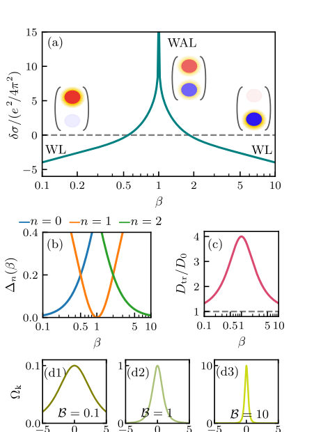
<figcaption class="paper-figure-caption"><b>Fig 1.</b> FIG. 1. (a) The normalized quantum-interference correction to the dc conductivity, δσ/(e2/4π2), in the λ-jellium model as a function of the dimensionless parameter β = Bk2 F /2, that controls the “active” band quantum geometry. Weak antilo- calization (WAL) due to the non-uniform quantum geometry occurs at β = 1, and weak localization (WL) occurs in the trivial limits of β →0 and β →∞. (b) At β = 1, equal weights of the two orbitals on the Fermi surface is responsi- ble for an emergent antiunitary symmetry T that protects a gapless Cooperon channel, ∆n=1(β = 1) →0, and results in WAL since T 2 = −1. The corresponding orbital spinors are shown in the insets of panel (a) for representative...</figcaption>
</figure>
<figure class="paper-figure-card">
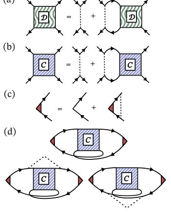
<figcaption class="paper-figure-caption"><b>Fig 2.</b> FIG. 2. Diagrammatic representation of the Bethe-Salpeter equation for: (a) diffuson, (b) Cooperon. Dashed lines de- note impurity vertices, while arrows denote the disordered electronic Green’s functions. (c) Vertex correction to the ve- locity from ladder diagrams. (d) Diagrams contributing to the quantum-interference correction of the conductivity: the bare and the two dressed Hikami boxes (top and bottom re- spectively).</figcaption>
</figure>
<figure class="paper-figure-card">
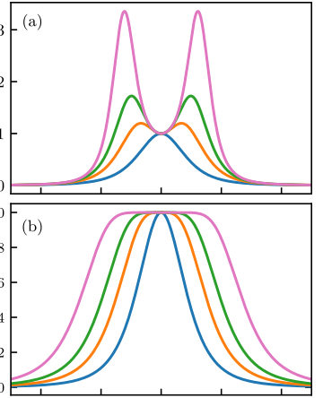
<figcaption class="paper-figure-caption"><b>Fig 3.</b> FIG. 3. Berry curvature ΩN(k): for (a) ideal RNG model, and (b) λN-model at B = 1, shown for different values of N. For N = 2, both models reduce to the λ-jellium model.</figcaption>
</figure>
<figure class="paper-figure-card">
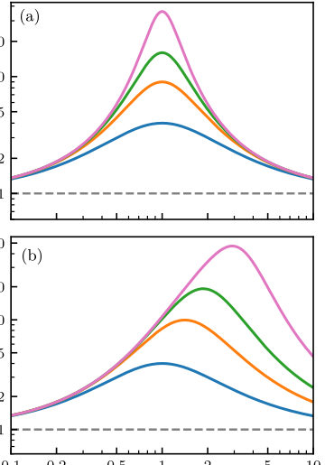
<figcaption class="paper-figure-caption"><b>Fig 4.</b> FIG. 4. Transport diffusion coefficient Dtr/Dbare for: (a) ideal RNG model, and (b) λN-model for different values of N. For N = 2, both models reduce to the λ-jellium model.</figcaption>
</figure>
<figure class="paper-figure-card">
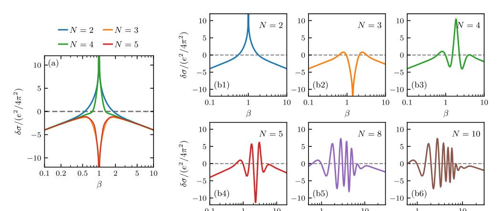
<figcaption class="paper-figure-caption"><b>Fig 5.</b> FIG. 5. The normalized quantum-interference correction to the dc conductivity, δσ/(e2/4π2), in: (a) the ideal model of RNG and (b) the λN-model. At β = 1, the ideal RNG model exhibits weak localization (WL) for odd N and weak anti-localization (WAL) for even N. The λN-model exhibits WAL for N = 2 and WL for N = 3. For N &gt; 3, no logarithmically divergent corrections are present.</figcaption>
</figure>
</div>

<p><strong>Summary.</strong> This theoretical work examines how varying the quantum geometry in disordered electronic bands affects quantum interference corrections to conductivity. By analyzing models based on graphene, the authors show that geometric tuning can induce crossovers between localization and antilocalization. Crucially, they demonstrate that specific geometric points restore gapless Cooperon modes via emergent symmetries, thereby controlling quantum interference effects.</p>
<p><strong>Why it may be interesting.</strong> The concept of emergent symmetries protecting gapless modes in engineered quantum systems is highly relevant to understanding topological phases and robust transport properties, which are key areas in AMO physics and quantum materials.</p>
<details>
<summary>Detailed structure</summary>
<p><strong>Main problem.</strong> The study investigates how non-uniform quantum geometry modifies quantum-interference corrections to DC conductivity in disordered electronic bands, especially when time-reversal symmetry (TRS) is broken.</p>
<p><strong>Main result.</strong> Nonuniform quantum geometry can qualitatively change the sign of the conductivity correction, allowing weak-localization or weak-antilocalization to re-emerge at special parameter values by protecting a gapless Cooperon mode via an emergent antiunitary symmetry.</p>
<p><strong>Method.</strong> The analysis uses a band-projected formalism, employing diagrammatic transport calculations involving the Diffuson and Cooperon propagators derived from solving Bethe-Salpeter equations.</p>
<p><strong>Model / system.</strong> The system is modeled using a band-projected framework, motivated by spin- and valley-polarized rhombohedral N-layer graphene (RNG) and analyzed via the $\lambda$-jellium model.</p>
<p><strong>Key observables.</strong> Quantum-interference correction to DC conductivity ($\delta\sigma$), Cooperon mode gap ($\Delta_n$), and the ratio of transport diffusion coefficient to bare diffusion coefficient ($D_{tr}/D_{bare}$).</p>
<p><strong>Important parameters / regimes.</strong> The dimensionless quantum geometric parameter $eta = B k_F / 2$, and the number of layers $N$.</p>
<p><strong>Assumptions / limitations.</strong> Assumes parabolic dispersion ($\xi_k$) and operates in the weak-disorder regime ($\mu	au \gg 1$).</p>
<p><strong>Figures summary.</strong> Figure 1 illustrates the quantum-interference correction $\delta\sigma$ vs. $eta$, showing crossovers between localization and antilocalization. Other figures detail the behavior of $D_{tr}/D_{bare}$ and Berry curvature profiles.</p>
<p><strong>Paper structure.</strong> The paper builds from general concepts of quantum interference corrections (Diffuson/Cooperon) to the specific application of the band-projected formalism. It derives the conductivity correction using Hikami boxes, analyzes the role of emergent antiunitary symmetries ($T_N$), and concludes by showing how geometry controls the gap closing and restoration of quantum interference effects.</p>
</details>
<details>
<summary>Abstract</summary>
<p>Weak localization in two-dimensional disordered electron systems originates from constructive interference between time-reversed scattering paths, giving rise to a logarithmically divergent quantum-interference correction to the dc conductivity. This behavior is generally suppressed when time-reversal symmetry (TRS) is broken. In this study, using a band-projected framework motivated by spin- and valley-polarized rhombohedral $N$-layer graphene (RNG), we show that nonuniform quantum geometry can qualitatively modify quantum-interference corrections to dc transport. In particular, continuously tuning the quantum geometry can change the sign of the conductivity correction, corresponding to a crossover between localization and antilocalization tendencies. Remarkably, at special values of the parameter controlling the quantum geometry, weak-localization (WL) or weak-antilocalization (WAL) can re-emerge despite broken microscopic TRS. At these special points, the orbital structure of the Bloch states gives rise to an emergent antiunitary symmetry that protects a gapless Cooperon mode and restores the logarithmically divergent quantum-interference correction characteristic of WL or WAL. Our results establish nonuniform quantum geometry as a mechanism for controlling quantum interference and electron localization in multiorbital electronic systems.</p>
</details>
<p><sub><a href="#top">↑ back to top</a></sub></p>

<p><a id="paper-2610.22801"></a></p>
<h3 id="programming-the-nonlinear-optics-of-a-nanoporous-photonic-metamaterial-by-confined-crystallization"><a href="http://arxiv.org/abs/2610.22801v1">Programming the Nonlinear Optics of a Nanoporous Photonic Metamaterial by Confined Crystallization</a></h3>
<p><strong>Authors:</strong> Andrii Z. Maxym, Junhui Lang, Bouchta Sahraoui, Anatoliy S. Andrushchak, Yaroslav Shchur, Olha Kityk, Robert Wielgosz, Monika Lelonek, Piotr Pawlik, Patrick Huber, Jaroslaw Jedryka, Andriy V. Kityk<br>
<strong>Type:</strong> experiment · <strong>Category:</strong> other · <strong>PDF:</strong> <a href="https://arxiv.org/pdf/2610.22801v1">https://arxiv.org/pdf/2610.22801v1</a><br>
<strong>Analysis basis:</strong> full PDF text, analyzed in chunks
<strong>Topic relevance:</strong> <code>interference shaping light</code> <strong>1/5</strong> · <code>quantum optics experiment</code> <strong>1/5</strong></p>
<div class="figure-strip-hint">↔ Scroll figures horizontally</div>
<div class="paper-figures-scroll">
<figure class="paper-figure-card">
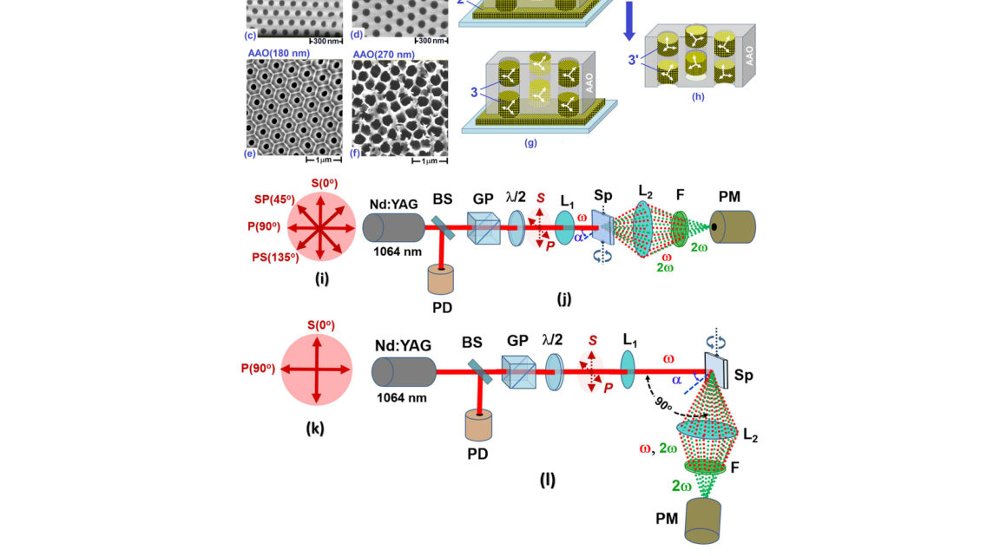
<figcaption class="paper-figure-caption"><b>Fig 1.</b> FIG. 1. Morphology of the AAO templates, schematic representation of the BZL crystallization regimes, and experimental arrangement for SHG measurements. (a–f) SEM images of AAO membranes with average nanochannel diameters of (a) 32, (b) 45, (c) 55, (d) 70, (e) 180, and (f) 270 nm used for fabrication of BZL:AAO nanocomposites. (g,h) Schematic illustration of the two crystallization regimes of BZL confined in AAO nanochannels: (g) correlated crystallization promoted by a bulk BZL layer formed between the AAO membrane and the supporting glass substrate GT; (h) uncorrelated crystallization in a free-standing AAO membrane. The stages marked 1/1’, 2, and 3/3’ represent the initial BZL...</figcaption>
</figure>
<figure class="paper-figure-card">
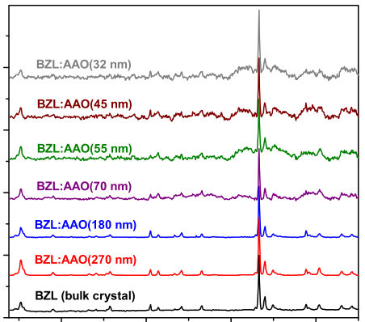
<figcaption class="paper-figure-caption"><b>Fig 2.</b> FIG. 2. Raman spectra of BZL:AAO nanocomposite mem- branes with channel diameters of 32, 45, 55, 70, 180, and 270 nm, obtained under free-standing crystallization condi- tions, with bulk BZL shown for comparison.</figcaption>
</figure>
<figure class="paper-figure-card">
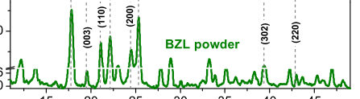
<figcaption class="paper-figure-caption"><b>Fig 3.</b> FIG. 3. X-ray diffraction patterns (θ/2θ scans) recorded from opposite sides of free-standing BZL:AAO nanocompos- ite membranes with channel diameters of 32, 45, 55, 70, 180, and 270 nm, obtained under free-standing crystallization con- ditions. The XRD pattern of bulk BZL powder is shown for comparison. The inset schematically illustrates the X- ray diffraction geometry.</figcaption>
</figure>
<figure class="paper-figure-card">
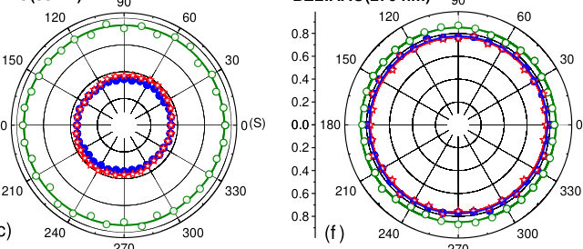
<figcaption class="paper-figure-caption"><b>Fig 4.</b> FIG. 5. SHG response as a function of the incident-light polarization direction for three fixed azimuthal angles, measured in transmission geometry for alumina–benzil nanocomposite membranes fabricated using the uncorrelated crystallization method- ology (free-standing crystallization): BZL:AAO (32 nm) (a), BZL:AAO (45 nm) (b), BZL:AAO (55 nm) (c) and BZL:AAO (70 nm) (d), each at α = −15◦, 0◦and +15◦; BZL:AAO (180 nm) (e) at α = −20◦, 0◦and +20◦; and BZL:AAO (270 nm) (f) at α = −30◦, 0◦and +30◦.</figcaption>
</figure>
<figure class="paper-figure-card">
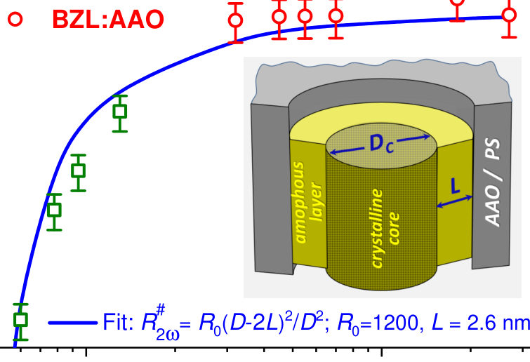
<figcaption class="paper-figure-caption"><b>Fig 5.</b> FIG. 6. Normalized SHG response R# 2ω = (h/1 mm)−1k−1 t P −1I2ω/I2ω(SiO2) from BZL:PS nanocomposite membranes (squares, green online color) [15] and BZL:AAO membranes (circles, red online color) as a function of channel diameter D. The blue solid line represents the model fit of the R# 2ω(D) dependence using the function R0(D −2L)2/D2, where R0 = 1200 and L = 2.6 nm are fitting parameters. The inset schematically illustrates the nanocrystalline cluster morphology consisting of an NLO-inactive amorphous interfacial layer adjacent to the host channel wall and an NLO-active crystalline core.</figcaption>
</figure>
</div>

<p><strong>Summary.</strong> This research demonstrates a method to engineer nonlinear optical metamaterials by controlling the crystallization of a molecular crystal (benzil) within nanopores. By comparing free-standing versus seeded crystallization, the authors show that the processing pathway dictates whether the resulting material exhibits isotropic or highly anisotropic nonlinear optical responses. This offers a powerful route to tailor optical properties at the nanoscale.</p>
<p><strong>Why it may be interesting.</strong> This work bridges solid-state physics, materials science, and quantum optics by demonstrating how processing parameters (crystallization pathway) can engineer macroscopic quantum-like properties (anisotropy in NLO response) in structured media.</p>
<details>
<summary>Detailed structure</summary>
<p><strong>Main problem.</strong> The paper aims to program the nonlinear optical properties of a photonic metamaterial by controlling the orientation of embedded nonlinear molecular crystals.</p>
<p><strong>Main result.</strong> Confined crystallization pathways allow for the control of the effective susceptibility tensor, enabling the creation of macroscopically anisotropic nonlinear optical metamaterials.</p>
<p><strong>Method.</strong> The study uses Second-Harmonic Generation (SHG) measurements combined with structural characterization (Raman and XRD) on AAO membranes filled with benzil (BZL).</p>
<p><strong>Model / system.</strong> The system is a photonic metamaterial formed by a dense array of nanochannels (AAO membrane) filled with BZL, which acts as a noncentrosymmetric nonlinear meta-atom. The orientation is controlled by the crystallization pathway (uncorrelated vs. seeded/correlated).</p>
<p><strong>Key observables.</strong> Effective second-harmonic generation (SHG) response, effective susceptibility tensor, and crystallographic texture (analyzed via XRD).</p>
<p><strong>Important parameters / regimes.</strong> Channel diameters ranging from 32 to 270 nm; the difference between free-standing (uncorrelated) and seeded (correlated) crystallization regimes.</p>
<p><strong>Assumptions / limitations.</strong> The optical response is governed by the architecture (metamaterial limit), and the crystallization process dictates the macroscopic anisotropy.</p>
<p><strong>Figures summary.</strong> Figures illustrate SEM images of AAO templates, Raman spectra comparing confined vs. bulk BZL, and XRD patterns showing changes in relative reflection intensities based on channel diameter and crystallization method.</p>
<p><strong>Paper structure.</strong> The paper systematically compares two regimes: uncorrelated crystallization in free-standing membranes (showing isotropic response) versus correlated crystallization seeded from a bulk layer (showing macroscopic anisotropy), using SHG and structural characterization to prove pathway control.</p>
</details>
<details>
<summary>Abstract</summary>
<p>A membrane traversed by a dense array of nanochannels acts as a photonic metamaterial: with channels far smaller than the wavelength of light, the optical response is set by the architecture rather than by the constituent materials. Here each nanochannel is turned into a nonlinear optical meta-atom by filling anodic aluminum oxide (AAO) with benzil (BZL), a noncentrosymmetric molecular crystal, and the crystallization pathway programs their orientation. In free-standing membranes every channel solidifies independently, the orientations remain uncorrelated, and the effective second-harmonic generation (SHG) response is nearly polarization isotropic; its magnitude follows a core - shell model in which an optically inactive interfacial layer of 2.6 nm reduces the active volume of each meta-atom, reproducing on bare alumina the value previously found on alkyl-grafted silica and indicating a host-insensitive limit. Seeding crystallization from a bulk benzil layer instead aligns the meta-atoms over submillimeter domains and produces a macroscopically anisotropic effective susceptibility. Channel diameters from 32 to 270 nm span the transition out of the subwavelength regime, and the anomalous directional SHG emission reported here is confined to the metamaterial limit. Confined crystallization thus offers a route to nonlinear optical metamaterials whose effective susceptibility tensor is written during processing.</p>
</details>
<p><sub><a href="#top">↑ back to top</a></sub></p>

<p><a id="paper-2610.23490"></a></p>
<h3 id="topological-magnetism-in-2d-and-3d-skyrmions-and-hopfions-classical-and-quantum-approaches"><a href="http://arxiv.org/abs/2610.23490v1">Topological Magnetism in 2D and 3D: Skyrmions and Hopfions. Classical and quantum approaches</a></h3>
<p><strong>Authors:</strong> ANtonio S T Pires<br>
<strong>Type:</strong> theory · <strong>Category:</strong> other · <strong>PDF:</strong> <a href="https://arxiv.org/pdf/2610.23490v1">https://arxiv.org/pdf/2610.23490v1</a><br>
<strong>Analysis basis:</strong> full PDF text, analyzed in chunks
<strong>Topic relevance:</strong> <code>Keldysh / 2PI / non-Gaussian methods</code> <strong>1/5</strong> · <code>analog quantum simulation</code> <strong>1/5</strong></p>
<div class="figure-strip-hint">↔ Scroll figures horizontally</div>
<div class="paper-figures-scroll">
<figure class="paper-figure-card">
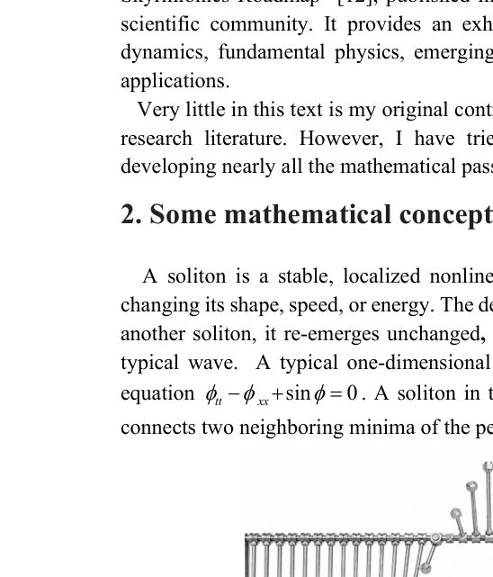
<figcaption class="paper-figure-caption"><b>Fig 1.</b> Figure 1. A sine-Gordon soliton.</figcaption>
</figure>
<figure class="paper-figure-card">
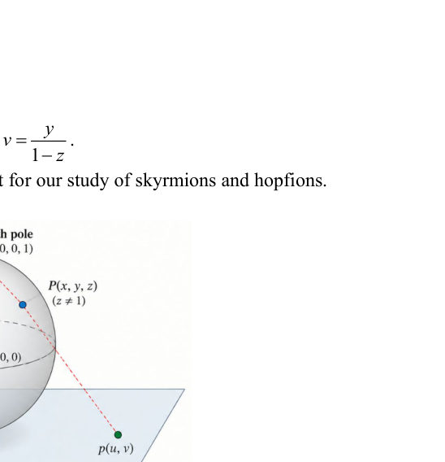
<figcaption class="paper-figure-caption"><b>Fig 2.</b> Figure 2. Stereographic projection of a sphere. Homotopy theory provides a systematic framework for classifying continuous maps between topological spaces. Therefore, I will briefly discuss this subject. Let 1p and 2p be points in a manifold X. If there is a curve C in X that goes from</figcaption>
</figure>
<figure class="paper-figure-card">
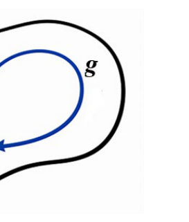
<figcaption class="paper-figure-caption"><b>Fig 3.</b> Figure 3. We can view the mapping 1 1( ), : Y f S Y π → , as a mapping from the interval [0, 1], such that</figcaption>
</figure>
<figure class="paper-figure-card">
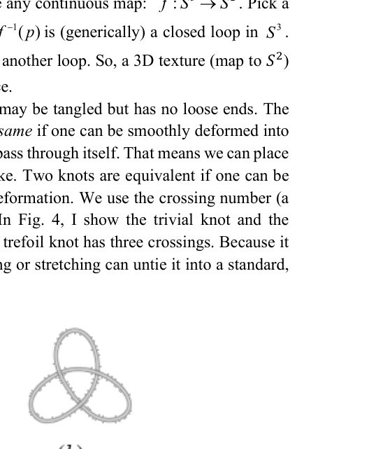
<figcaption class="paper-figure-caption"><b>Fig 4.</b> Figure 4. (a) the unknot (trivial knot) and (b) the trefoil. The Hopf invariant relates to knot theory primarily through the linking number and maps between spheres (π₃(S²)). Mathematically, it measures how many times the preimages of two points in a mapped space intertwine, which translates directly to the topological interlocking of closed loops (knots and links). In 3D physical systems, a hopfion is a stable, knot-like twisting of fields (e.g., in magnetic materials, liquid crystals, or quantum matter). The Hopf invariant determines the mathematical stability and topological &quot;charge&quot; of these knotted defects. I will discuss hopfions in section 14. Two circles linked exactly once, like a...</figcaption>
</figure>
<figure class="paper-figure-card">
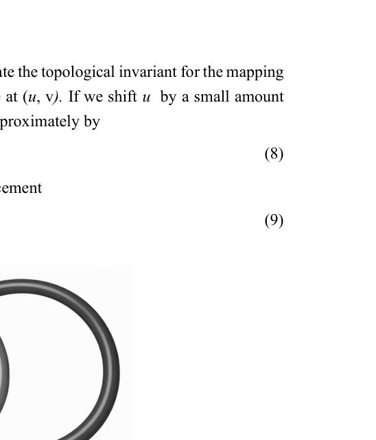
<figcaption class="paper-figure-caption"><b>Fig 5.</b> Figure 5. A Hopf link. These two displacements form two adjacent sides of a parallelogram on the surface.</figcaption>
</figure>
</div>

<p><strong>Summary.</strong> This review comprehensively surveys topological magnetism, detailing how skyrmions and Hopfions—stable, knot-like magnetic textures—are characterized by topological invariants. It bridges classical continuum field theory, advanced topology, and quantum mechanics to provide a unified understanding of these structures across different dimensions and magnetic materials.</p>
<p><strong>Why it may be interesting.</strong> The rigorous mathematical connection between topological invariants (like the Hopf invariant) and the emergent stable states in condensed matter systems provides a powerful, non-Hamiltonian constraint on magnetic dynamics, relevant for understanding exotic quantum states.</p>
<details>
<summary>Detailed structure</summary>
<p><strong>Main problem.</strong> To provide a unified theoretical framework for understanding the formation, stability, dynamics, and quantum properties of topological magnetic textures, specifically skyrmions and Hopfions, in both 2D and 3D.</p>
<p><strong>Main result.</strong> The paper establishes that the stability and classification of these magnetic textures are governed by topological invariants, such as the winding number and the Hopf invariant, which arise from mapping the physical space onto spheres.</p>
<p><strong>Method.</strong> The approach combines continuum field theory, advanced topology (homotopy theory), classical magnetic dynamics (LLG equations), and quantum mechanical formalisms (path integrals, spin coherent states).</p>
<p><strong>Model / system.</strong> The study focuses on magnetization $\mathbf{M}$ in ferromagnetic and antiferromagnetic systems. The mathematical framework involves mapping the magnetization vector onto the unit sphere $S^2$ or $S^3$.</p>
<p><strong>Key observables.</strong> Topological charge (skyrmions), Hopf invariant (Hopfions), and the dynamical evolution governed by generalized Landau-Lifshitz equations.</p>
<p><strong>Important parameters / regimes.</strong> The competition between exchange, Dzyaloshinskii-Moriya interaction (DMI), and dipole-dipole interactions dictates the existence and stability of the textures.</p>
<p><strong>Assumptions / limitations.</strong> The analysis often relies on semiclassical approximations or continuum field theory descriptions, though it aims to extend beyond these limits to quantum regimes.</p>
<p><strong>Figures summary.</strong> Figures illustrate concepts like the sine-Gordon soliton, stereographic projections of spheres, and the geometric structure of the Hopf fibration, showing linked circles.</p>
<p><strong>Paper structure.</strong> The review progresses logically from basic mathematical concepts (homotopy groups $\pi_n(Y)$) to classical descriptions of skyrmions (2D), extension to Hopfions (3D), and finally incorporating quantum mechanical treatments.</p>
</details>
<details>
<summary>Abstract</summary>
<p>We discuss the properties of ferromagnetic skyrmions in relation to the Dzyaloshinskii Moriya interaction, nonlinear sigma models, merons, vortices, frustration, and dipole dipole interactions. Particular attention is given to skyrmion skyrmion interactions and to the dynamical equations governing magnetic textures, including the Landau Lifshitz Gilbert, Thiele, and Landau Lifshitz Bloch equations. The review subsequently extends the discussion to antiferromagnetic systems and to topological structures in three dimensions, with emphasis on Hopfions and their topological characterization. We then examine quantum skyrmions, including approaches that go beyond the semiclassical description, and discuss the emergence of quantum Hopfions. The theoretical framework is complemented by appendices presenting analytical solutions and ansatzes for skyrmions, spin coherent states and path integrals, quantum antiferromagnets, spin torques, fiber-bundle concepts and the Hopf map, and the Euler Lagrange formalism in three dimensions. By connecting continuum field theory, magnetic dynamics, topology, and quantum mechanics, this review aims to provide a coherent framework for understanding the formation, stability, dynamics, interactions, and quantum properties of topological magnetic textures across different dimensions and magnetic systems.</p>
</details>
<p><sub><a href="#top">↑ back to top</a></sub></p>

<p><a id="paper-2610.23764"></a></p>
<h3 id="temperature-and-thickness-dependent-spin-current-transmission-through-epitaxial-antiferromagnetic-fe2o3"><a href="http://arxiv.org/abs/2610.23764v1">Temperature and Thickness Dependent Spin Current Transmission through Epitaxial Antiferromagnetic α-Fe2O3</a></h3>
<p><strong>Authors:</strong> Koushik Prabhakara, Rajeev Nepal, Subhashree Chatterjee, Rabindra Basnet, Ezana Negusse, Ramesh C Budhani<br>
<strong>Type:</strong> experiment · <strong>Category:</strong> other · <strong>PDF:</strong> <a href="https://arxiv.org/pdf/2610.23764v1">https://arxiv.org/pdf/2610.23764v1</a><br>
<strong>Analysis basis:</strong> full PDF text, analyzed in chunks
<strong>Topic relevance:</strong> <code>quantum measurements</code> <strong>1/5</strong></p>
<div class="figure-strip-hint">↔ Scroll figures horizontally</div>
<div class="paper-figures-scroll">
<figure class="paper-figure-card">

<figcaption class="paper-figure-caption"><b>Fig 1.</b> Figure 1: AFM surface topography of (a) 9 nm Pt</figcaption>
</figure>
<figure class="paper-figure-card">
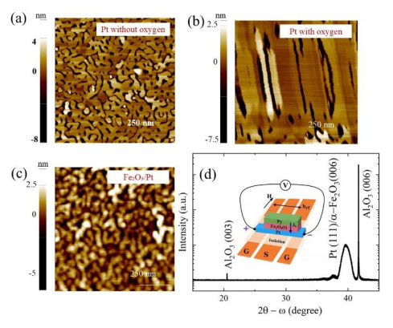
<figcaption class="paper-figure-caption"><b>Fig 2.</b> Fig. 1(d) shows the 2- X-ray diffraction pattern of the</figcaption>
</figure>
<figure class="paper-figure-card">
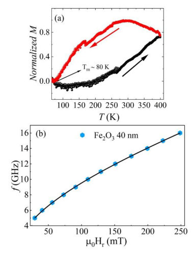
<figcaption class="paper-figure-caption"><b>Fig 3.</b> Figure 2: (a) Normalized magnetization of Pt/α-</figcaption>
</figure>
<figure class="paper-figure-card">
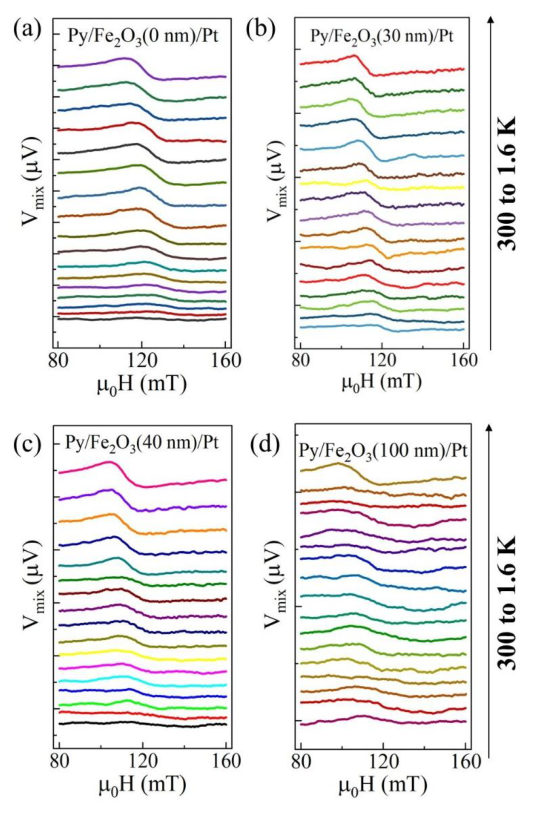
<figcaption class="paper-figure-caption"><b>Fig 4.</b> Figure 3: Field dependence of Vmix for Py/α-Fe2O3/Pt</figcaption>
</figure>
<figure class="paper-figure-card">
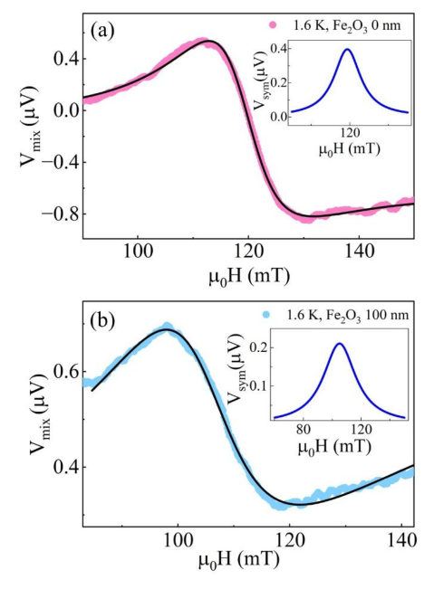
<figcaption class="paper-figure-caption"><b>Fig 5.</b> Figure 4: Field dependence of Vmix for (a) Py/Pt and (b)</figcaption>
</figure>
</div>

<p><strong>Summary.</strong> This work investigates spin-current transmission through epitaxial $\alpha$-Fe$_2$O$_3$ thin films using spin pumping and the Inverse Spin Hall Effect. By measuring the temperature dependence of the resulting voltage coefficient ($K_s$), the authors demonstrate that spin transport is highly sensitive to the magnetic state of the insulator. They identify a characteristic temperature ($T^*$) linked to the material's magnetic reorientation, providing crucial data for spintronic device design.</p>
<p><strong>Why it may be interesting.</strong> While focused on condensed matter magnetism, the precise measurement of spin transport coefficients ($K_s$) as a function of magnetic state and temperature provides fundamental insights into spin-orbit coupling and spin dynamics in magnetic insulators, which are relevant to quantum spintronics.</p>
<details>
<summary>Detailed structure</summary>
<p><strong>Main problem.</strong> The study aims to understand how the magnetic state of an antiferromagnetic insulator, $\alpha$-Fe$_2$O$_3$, influences the transmission of spin current.</p>
<p><strong>Main result.</strong> Spin-current transmission was observed across a wide temperature range, showing that the spin-current coefficient ($K_s$) exhibits a distinct change in temperature dependence correlated with the material's magnetic reorientation transition ($T^*$).</p>
<p><strong>Method.</strong> The experiment uses spin pumping combined with the Inverse Spin Hall Effect (ISHE) in a Pt detector layer, measuring the resulting symmetric DC voltage across the $\alpha$-Fe$_2$O$_3$ spacer.</p>
<p><strong>Model / system.</strong> The physical system is an epitaxial heterostructure consisting of a Permalloy (Py) ferromagnet, an $\alpha$-Fe$_2$O$_3$ antiferromagnetic insulator spacer, and a Pt detector layer. Measurements are performed over temperatures from 1.6 K to 300 K.</p>
<p><strong>Key observables.</strong> Symmetric DC voltage coefficient ($K_s$), characteristic temperature ($T^*$), and the temperature derivative of $K_s$ ($dK_s/dT$).</p>
<p><strong>Important parameters / regimes.</strong> Film thickness (0, 30, 40, 100 nm), temperature range (1.6 K to 300 K), and the characteristic temperature $T^*$.</p>
<p><strong>Assumptions / limitations.</strong> The observed $T^*$ is correlated with the spin reorientation transition (Morin transition) in $\alpha$-Fe$_2$O$_3$, and the measurement isolates the spin-current contribution via symmetric voltage analysis.</p>
<p><strong>Figures summary.</strong> Figures show AFM topography and XRD patterns confirming film quality. Key figures illustrate the field dependence of the measured voltage ($V_{mix}$) for various thicknesses and temperatures, and plots of $K_s$ vs. temperature clearly show the change in slope at $T^*$.</p>
<p><strong>Paper structure.</strong> The paper establishes the physical system and the problem (spin transport in AFM insulators). It details the experimental setup (spin pumping/ISHE) and presents results showing the temperature and thickness dependence of $K_s$, linking the observed changes to the magnetic phase transitions of $\alpha$-Fe$_2$O$_3$.</p>
</details>
<details>
<summary>Abstract</summary>
<p>Antiferromagnetic insulator α-Fe2O3 is a potential medium for coherent motion of spin waves over relatively large distances, allowing non-dissipative transfer of information between circuit elements. However, the structural defects and temperature dependent spin reorientations in this oxide impact the propagation. Understanding how the magnetic state of an antiferromagnetic insulator affects spin-current transmission is therefore important for elucidating the mechanisms governing spin transport. Here, we report spin-current transmission through epitaxial α-Fe2O3 thin films sandwiched between Permalloy and Pt. Using spin pumping and inverse spin Hall effect, we observe a finite symmetric dc voltage across the Pt layer over the temperature range 1.6 to 300 K for alpha-Fe2O3 thicknesses of 0, 30, 40, and 100 nm. The symmetric voltage coefficient Ks exhibits two approximately linear temperature regimes, separated by a characteristic temperature T<em> whose value depends on the thickness of the α-Fe2O3 layer. Further, the dc magnetization measurements on some of the samples suggest that the T</em> is correlated with the spin reorientation transition (Morin transition) in α-Fe2O3. Interestingly, a significantly larger magnitude of dKs/dT is noted below the characteristic temperature T*. The observed thickness and temperature dependent spin-current transmission indicates a sensitivity to the magnetic state of the insulating hematite layer.</p>
</details>
<p><sub><a href="#top">↑ back to top</a></sub></p>

<p><a id="paper-2610.23761"></a></p>
<h3 id="type-15-vortex-bags-in-single-component-ginzburg-landau-models-with-higher-order-potentials"><a href="http://arxiv.org/abs/2610.23761v1">Type 1.5 vortex bags in single component Ginzburg-Landau models with higher order potentials</a></h3>
<p><strong>Authors:</strong> Martin Speight, Thomas Winyard<br>
<strong>Type:</strong> theory · <strong>Category:</strong> other · <strong>PDF:</strong> <a href="https://arxiv.org/pdf/2610.23761v1">https://arxiv.org/pdf/2610.23761v1</a><br>
<strong>Analysis basis:</strong> full PDF text, analyzed in chunks
<strong>Topic relevance:</strong> <code>analog quantum simulation</code> <strong>1/5</strong></p>
<div class="figure-strip-hint">↔ Scroll figures horizontally</div>
<div class="paper-figures-scroll">
<figure class="paper-figure-card">
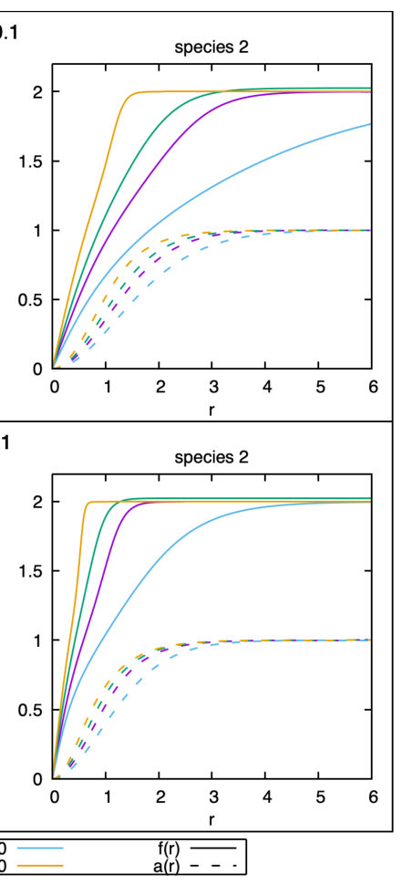
<figcaption class="paper-figure-caption"><b>Fig 1.</b> Figure 1: Profile solutions to (3.4) for a single vortex (N = 1).</figcaption>
</figure>
<figure class="paper-figure-card">
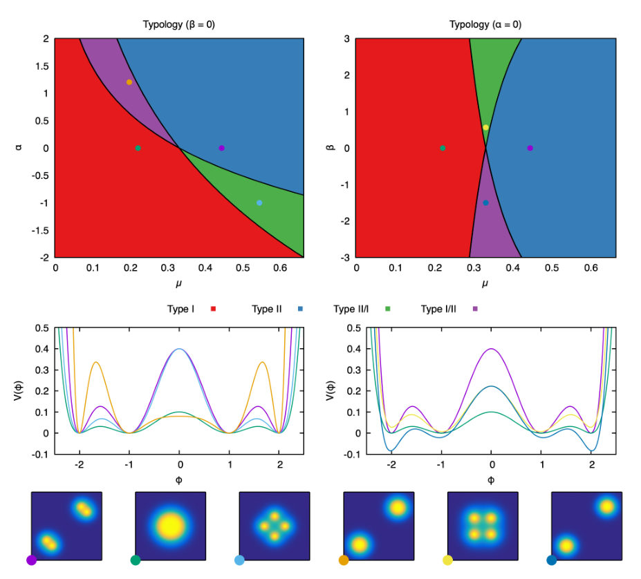
<figcaption class="paper-figure-caption"><b>Fig 2.</b> Figure 2: The top row indicates the typology of the model for different parameters. The coloured points indicate the parameters of the potentials plotted in the same colour in row 2 and the vortex configurations in the final row. The configurations are plots of the magnetic field density B for a winding 4 local minimizer that resulted from an initial condition of two well separated degree 2 configurations. The typology then determines the interaction type as described in section 3.</figcaption>
</figure>
<figure class="paper-figure-card">
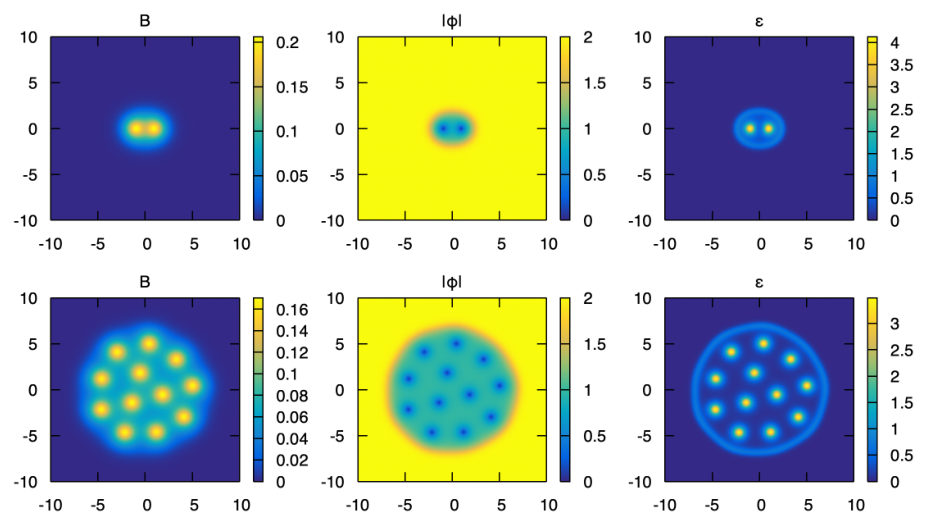
<figcaption class="paper-figure-caption"><b>Fig 3.</b> Figure 3: Local minimizers of degree N = 2 and N = 12 respectively for µ2 = 2, m1 = 1, m2 = 2 and α = β = 0. The plots include the magnetic field density B the order parameter magnitude |ψ| and the energy density E. These parameters correspond to type II for both vacua, as can be seen in Figure 3, hence they split locally, but are contained by the domain wall into the superconducting bubble.</figcaption>
</figure>
<figure class="paper-figure-card">
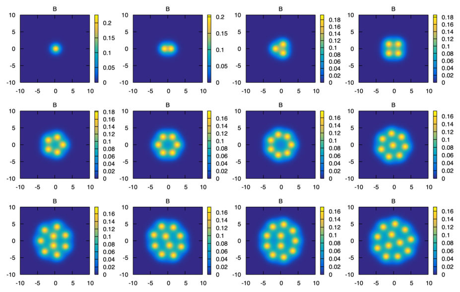
<figcaption class="paper-figure-caption"><b>Fig 4.</b> Figure 4: Plots of the magnetic field density B for local minimizers of degree N = 1 −12 for parameters µ2 = 2, m1 = 1, m2 = 2 and α = β = 0 which is type II.</figcaption>
</figure>
<figure class="paper-figure-card">
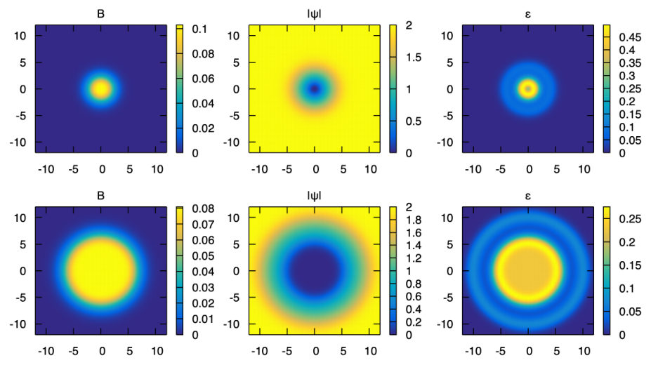
<figcaption class="paper-figure-caption"><b>Fig 5.</b> Figure 5: Local minimizers of degree N = 2 and N = 12 respectively for µ2 = 0.05, m1 = 1, m2 = 2 and α = β = 0. The plots include the magnetic field density B the order parameter magnitude |ψ| and the energy density E. These parameters correspond to type I for both vacua, as can be seen in Figure 3, hence vortices attract and form a single large winding vortex, contained by the domain wall.</figcaption>
</figure>
</div>

<p><strong>Summary.</strong> This theoretical work demonstrates that incorporating higher-order terms into the Ginzburg-Landau potential can induce multiple competing superconducting states in a single-component superconductor. This leads to complex vortex structures, termed 'bags,' whose interactions can mimic the behavior of type 1.5 superconductors. The analysis relies on solving the field equations and linearizing the long-range behavior to classify these novel superconducting regimes.</p>
<p><strong>Why it may be interesting.</strong> The study of complex vortex structures and multi-scale physics in superconductors provides theoretical analogues for understanding phase transitions and topological defects in other condensed matter systems, which is relevant to understanding quantum phase transitions.</p>
<details>
<summary>Detailed structure</summary>
<p><strong>Main problem.</strong> The paper investigates the existence and nature of 'type 1.5 like superconductivity' within a single-component Ginzburg-Landau model that incorporates higher-order potentials.</p>
<p><strong>Main result.</strong> The higher-order potential allows for multiple competing superconducting Meissner states, leading to complex vortex interactions that can exhibit characteristics of type 1.5 behavior, even in a single-component system.</p>
<p><strong>Method.</strong> The analysis involves solving non-linear field equations numerically and linearizing the equations far from the vortex cores to determine long-range interaction potentials.</p>
<p><strong>Model / system.</strong> The system is described by a single complex order parameter field $\psi$ coupled to a U(1) gauge field $A$, governed by a GL free energy functional generalized with a higher-order potential $V(\psi)$.</p>
<p><strong>Key observables.</strong> Vortex interaction type (determined by the hierarchy of four length scales), vortex clustering patterns (bags), and the superconducting Meissner state (MS) type.</p>
<p><strong>Important parameters / regimes.</strong> The ratio $\kappa = \lambda/\xi$ for the competing vacua, and the parameters controlling the higher-order potential ($\alpha, eta$).</p>
<p><strong>Assumptions / limitations.</strong> The analysis relies on linearizing the field equations for long-range interactions, which is valid far from the vortex cores.</p>
<p><strong>Figures summary.</strong> Figures illustrate the model's typology across different parameters and show numerical results of vortex configurations for varying winding numbers ($N$), demonstrating the formation of 'bags' or domain walls.</p>
<p><strong>Paper structure.</strong> The paper establishes the generalized GL model, analyzes the existence of multiple competing superconducting vacua, derives the long-range interaction potentials based on these vacua, and finally classifies the resulting vortex structures into four distinct interaction types.</p>
</details>
<details>
<summary>Abstract</summary>
<p>We demonstrate the existence of type 1.5 like superconductivity in a single component Ginzburg-Landau model with a higher order potential. The model exhibits two competing superconducting Meissner states (MS), each of which has its own pair of length scales (coherence length and penetration depth). The solutions take the form of bags that contain vortices of one vacuum inside the other. This gives rise to four different types of vortex interaction, where one set of length scales determines vortex interactions inside the bags and the other set between the bags. Hence, within the bag the vortices can repel or attract and the bags themselves can repel or attract depending on the hierarchy of four length scales. When vortices repel within the bag, solutions act similarly to those in type 1.5 multicomponent superconductors, but in a single component system.</p>
</details>
<p><sub><a href="#top">↑ back to top</a></sub></p>
<h3 id="other-secondary-papers-5">Other secondary papers (5)</h3>
<details>
<summary>Show other secondary papers</summary>

<p><a id="paper-2610.22917"></a></p>
<h3 id="fully-gapped-superconductivity-in-the-nonsymmorphic-centrosymmetric-superconductor-in2bi"><a href="http://arxiv.org/abs/2610.22917v1">Fully Gapped Superconductivity in the Nonsymmorphic Centrosymmetric Superconductor In2Bi</a></h3>
<p><strong>Authors:</strong> Atul Gangwar, Kunal Yadav, Barnabha bandyopadhyay, S. Patnaik, K. G. Suresh, Sandip Chatterjee<br>
<strong>Type:</strong> experiment · <strong>Category:</strong> other · <strong>PDF:</strong> <a href="https://arxiv.org/pdf/2610.22917v1">https://arxiv.org/pdf/2610.22917v1</a><br>
<strong>Analysis basis:</strong> full PDF text, analyzed in chunks</p>
<div class="figure-strip-hint">↔ Scroll figures horizontally</div>
<div class="paper-figures-scroll">
<figure class="paper-figure-card">

<figcaption class="paper-figure-caption"><b>Fig 1.</b> FIG. 1. shows X-ray diffraction (XRD) pattern for In2Bi and inset shows the image of pallet with shiny metallic luster sur- face.</figcaption>
</figure>
<figure class="paper-figure-card">

<figcaption class="paper-figure-caption"><b>Fig 2.</b> Figure 2(a) shows the resistivity data in tempera- ture range 1.8 - 300 K, measured using standard four probe method in 10 mA applied current in zero mag- netic field. The lower inset shows the superconducting transition at 5.86 K with the sharp superconducting gap ∆T(T onset c −T zero c ) = 0.1 K and the residual resistiv- ity ratio (RRR), calculated as RRR = ρ(300K)/ρ(7K), is 57.32. Both ∆T and RRR are reflecting the high quality of the sample. Above Tc, the sample shows typical metallic behavior. The lower inset of Fig.2(b) shows the normal state resistivity data in temperature range of 7 - 20 K, which follow the Fermi liquid be- havior for a typical metal and can be fit using the for-...</figcaption>
</figure>
<figure class="paper-figure-card">

<figcaption class="paper-figure-caption"><b>Fig 3.</b> FIG. 2. (a)shows the resistivity data in the temperature range 1.8 - 300 K. Lower inset is the close view near the superconducting transition. (b) shows the fitting using Bloch–Grüneisen and Fermi liquid model in range of 7 - 300 K and upper inset shows the Fermi liquid fit in temperature range 7 - 20 K. (c) shows the magneto-resistance in temperature range 1.9 - 8 K under various magnetic fields.(d) Solid red curve shows the GL fit for the T onset c and T zero c .</figcaption>
</figure>
<figure class="paper-figure-card">

<figcaption class="paper-figure-caption"><b>Fig 4.</b> FIG. 3. (a) Temperature dependence of magnetization measured in zero-field-cooled (ZFC) and field-cooled (FC) modes at 10 Oe between 1.8 and 8 K. (b) Magnetization curves under various magnetic fields up to 2000 Oe, with the inset showing an enlarged view at 1800 Oe. (c) Upper critical field Hc2(T) fitted with the generalized GL model.</figcaption>
</figure>
<figure class="paper-figure-card">

<figcaption class="paper-figure-caption"><b>Fig 5.</b> FIG. 4. (a) M(H) isotherm curves in 0-1000 Oe magnetic field after the demagnetization correction. The solid green line is Meissner-line corresponding to the linear fitting.(b) shows the Hc1(T) phase diagram and solid red line is the GL model fit.(c) shows superfluid density (ρs(T)) calculated from Hc1 and solid red line is BCS s-wave fitting.(d) shows typical hysteresis loops for type-II superconductors at various temperatures.</figcaption>
</figure>
</div>
<p><strong>Summary.</strong> This paper experimentally investigates the superconducting properties of In2Bi using a combination of transport, magnetic, and thermodynamic measurements. By analyzing the temperature dependence of the gap and critical fields, the authors conclude that In2Bi behaves as a type-II, BCS-like, fully gapped superconductor. The results strongly support a conventional, phonon-mediated pairing mechanism operating in a strongly coupled regime.</p>
<p><strong>Why it may be interesting.</strong> While focused on BCS-like behavior, the strong coupling constant and enhanced gap ratio suggest physics beyond simple weak-coupling BCS theory, which is relevant for understanding pairing mechanisms in strongly correlated or unconventional systems.</p>
<details>
<summary>Detailed structure</summary>
<p><strong>Main problem.</strong> To determine the nature of superconductivity (conventional vs. unconventional) in the nonsymmorphic centrosymmetric superconductor In2Bi.</p>
<p><strong>Main result.</strong> The study concludes that In2Bi is a typical type-II, BCS-like, strongly coupled, and fully gapped superconductor in the dirty limit.</p>
<p><strong>Method.</strong> The research employed multiple experimental probes, including electrical resistivity, magnetization, penetration depth, and specific heat measurements.</p>
<p><strong>Model / system.</strong> The physical system is polycrystalline In2Bi. The analysis heavily relies on fitting superconducting properties to the BCS model and using the Ginzburg-Landau model for critical fields.</p>
<p><strong>Key observables.</strong> Superconducting transition temperature (Tc ~ 6 K), upper critical field (Hc2), coherence length (35.43 nm), penetration depth (101.9 nm), and the gap ratio (2Delta_0/kBTc ~ 4.0).</p>
<p><strong>Important parameters / regimes.</strong> The electron-phonon coupling constant (lambda_e-ph = 1.05) suggests strong coupling; the gap ratio values are consistently above the weak-coupling BCS limit (3.53).</p>
<p><strong>Assumptions / limitations.</strong> The analysis assumes the BCS model accurately describes the superconducting state, and the use of the GL model for Hc2 is an approximation.</p>
<p><strong>Figures summary.</strong> Figures show XRD patterns confirming sample purity, resistivity vs. T under varying fields, and fittings of normal state resistivity using Fermi liquid and Bloch-Grüneisen models.</p>
<p><strong>Paper structure.</strong> The paper systematically presents measurements across multiple techniques (resistivity, magnetization, $\lambda(T)$, $C_p(T)$) to characterize the superconducting state, comparing results against BCS theory predictions to establish a consistent picture of the pairing symmetry and gap structure.</p>
</details>
<details>
<summary>Abstract</summary>
<p>The nature of superconductivity in nonsymmorphic In2Bi remains an open question, with ongoing debate over whether it exhibits conventional (BCS-like) or unconventional superconductivity. Here we report the physical characteristics and superconducting properties of polycrystalline In2Bi. Measurements of electrical resistivity, magnetization, penetration depth, and specific heat demonstrate the superconducting transition temperature about 6 K, with a sharp transition in resistivity (Delta_Tc = 0.1 K) and RRR = 57.32, reflecting the high quality of the sample. The upper critical field Hc2(0) obtained from resistivity and magnetization measurements are in good agreement with each other and are smaller than the Pauli limit, suggesting orbital limited mechanism. The coherence length = 35.43 nm, penetration depth = 101.9 nm and electron-phonon coupling constant = 1.05 suggest strongly coupled type-II superconductivity. For T&lt;Tc, Delta_lambda(T) is best described by an s-wave BCS model and does not have any power law dependency with T, which is expected for a nodeless superconducting order parameter. The superfluid density reveals a fully gapped superconductivity with a gap of 2Delta_0/kBTc = 4.02. In the superconducting state, the electronic specific heat is best described by an s-wave BCS model with a gap of 2Delta_0/kBTc = 4.05. All these results from the present study indicate that In2Bi is a typical type-II,BCS-like, strongly coupled, and fully gapped superconductor in the dirty limit.</p>
</details>
<p><sub><a href="#top">↑ back to top</a></sub></p>

<p><a id="paper-2610.22935"></a></p>
<h3 id="hidden-staggered-superconducting-order-in-v2se2o-family-altermagnets"><a href="http://arxiv.org/abs/2610.22935v1">Hidden Staggered Superconducting Order in V2Se2O-Family Altermagnets</a></h3>
<p><strong>Authors:</strong> Chun Yu Wan, Xiangxi Zhang, Fei Yang, Junwei Liu<br>
<strong>Type:</strong> theory · <strong>Category:</strong> other · <strong>PDF:</strong> <a href="https://arxiv.org/pdf/2610.22935v1">https://arxiv.org/pdf/2610.22935v1</a><br>
<strong>Analysis basis:</strong> full PDF text, analyzed in chunks</p>
<div class="figure-strip-hint">↔ Scroll figures horizontally</div>
<div class="paper-figures-scroll">
<figure class="paper-figure-card">

<figcaption class="paper-figure-caption"><b>Fig 1.</b> FIG. 1. (a) Schematic of the hopping processes and intersublattice spin-singlet pairing considered in the model, including extended-𝑠- and 𝑑-wave channels. (b) Representative Fermi surface exhibiting strong altermagnetic spin splitting and oppositely spin-polarized val- leys at 𝑋and 𝑌. (c) Real-space structure of the 𝜂-like condensate, whose phase alternates by 𝜋between neighboring unit cells while its magnitude remains uniform. (d) 𝜂-like-pairing amplitude as a func- tion of temperature 𝑇and hopping anisotropy 𝑡𝛼−𝑡𝛽, which controls the altermagnetic spin splitting. The inset compares the pairing am- plitudes of uniform and 𝜂-like pairing at 𝑇= 0.4.</figcaption>
</figure>
<figure class="paper-figure-card">

<figcaption class="paper-figure-caption"><b>Fig 2.</b> FIG. 2. (a) Fermi surface with single pockets and finite valley mis- match, where the 𝜂-like state evolves into an intervalley FF′ state with pairing momentum Q −𝛿q (i.e., an FF-like modulation of the stag- gered 𝜂-like-pairing state). The inset shows the corresponding small momentum shift 𝛿q in the folded Brillouin zone. (b) Pairing momen- tum and SC gap (inset) for strong altermagnetic splitting, showing the 𝜂-like-to-FF′ transition occurring at large valley mismatch. (c) Fermi surface with two overlapping pockets, allowing finite-momentum in- travalley pairing. The inset shows the folded Brillouin zone. (d) Equilibrium Cooper-pair momentum and SC gap (inset) as functions of 𝑡𝛼+ 𝑡𝛽and 𝜇....</figcaption>
</figure>
<figure class="paper-figure-card">

<figcaption class="paper-figure-caption"><b>Fig 3.</b> FIG. 3. (a) Schematic of a Josephson junction between a staggered 𝜂-like-pairing SC and a uniform SC. The staggered pairing doubles the unit cell, which contains two primitive cells and four sublattices. (b) Current-phase relation (CPR) and its harmonic decomposition. All odd harmonics vanish due to the staggered structure of the 𝜂-like condensate, leaving only even-harmonic contributions. The CPR is dominated by the second harmonic sin(2𝜃), with smaller sin(4𝜃) and sin(6𝜃) components. In the simulations, 𝜇= 2, 𝑡′ = −1, and 𝑡𝑧= 1, with 𝑡𝛼= −𝑡𝛽= 0.6 for the 𝜂-like-pairing SC.</figcaption>
</figure>
</div>
<p><strong>Summary.</strong> This theoretical work demonstrates that altermagnetism in V2Se2O-family materials naturally induces a hidden staggered superconducting order ($\eta$-pairing). This exotic state, which involves a sign change in the order parameter between unit cells, is predicted to be robust and can be unambiguously detected using a phase-sensitive Josephson junction measurement that reveals a characteristic charge-$4e$ response.</p>
<p><strong>Why it may be interesting.</strong> The concept of using crystalline magnetic symmetry to dictate the translational structure of a superconducting condensate is highly relevant to understanding exotic pairing mechanisms in strongly correlated systems, bridging magnetism and superconductivity.</p>
<details>
<summary>Detailed structure</summary>
<p><strong>Main problem.</strong> The paper aims to reveal and characterize the hidden staggered superconducting order ($\eta$-pairing) in V2Se2O-family altermagnets.</p>
<p><strong>Main result.</strong> The altermagnetic nature naturally favors this $\eta$-like pairing, which can be directly detected via a phase-sensitive Josephson measurement exhibiting a charge-$4e$-like response.</p>
<p><strong>Method.</strong> The study uses mean-field theory applied to a tight-binding model, analyzing the thermodynamic potential and calculating the Current-Phase Relation (CPR) for a Josephson junction.</p>
<p><strong>Model / system.</strong> The system is the V2Se2O-family altermagnets, modeled using a tight-binding Hamiltonian on two oppositely spin-polarized, symmetry-related valleys (X and Y) separated by a commensurate momentum Q=(pi, pi).</p>
<p><strong>Key observables.</strong> Phase-sensitive Josephson current (showing even harmonics in the CPR) and the superconducting order parameter $\Delta_{\delta}(R_c)$ exhibiting staggered phase structure.</p>
<p><strong>Important parameters / regimes.</strong> The robustness of the $\eta$-like state is shown to be independent of variations in chemical potential, hopping parameters, and Fermi-surface topology.</p>
<p><strong>Assumptions / limitations.</strong> The analysis assumes the electronic structure is highly two-dimensional with negligible interlayer hopping, and that the Josephson junction interface is symmetry-balanced.</p>
<p><strong>Figures summary.</strong> Figures illustrate the schematic of hopping processes, the spin-split Fermi surface with valleys at X and Y, the real-space structure of the staggered condensate, and the expected even-harmonic dependence of the Josephson CPR.</p>
<p><strong>Paper structure.</strong> The paper progresses from establishing the physical mechanism (altermagnetism favoring $\eta$-pairing) to developing the theoretical framework (mean-field calculation of the SC state) and finally proposing a definitive diagnostic test (phase-sensitive Josephson measurement).</p>
</details>
<details>
<summary>Abstract</summary>
<p>$η$ pairing describes a staggered superconducting condensate whose order parameter changes sign between neighboring unit cells while maintaining a uniform magnitude. Nearly four decades after its theoretical proposal by C. N. Yang, a material platform for stabilizing $η$ pairing has remained elusive. Here, we reveal that altermagnetism, despite being pair breaking for conventional BCS pairing, naturally favors $η$-like pairing in V$_2$Se$_2$O-family altermagnets. Their valley-contrasting spin structure gives rise to oppositely spin-polarized, symmetry-related valleys centered at $X=(π,0)$ and $Y=(0,π)$, which form spin-singlet pairing partners separated by the commensurate momentum $\mathbf Q=(π,π)$, thereby favoring an $η$-like condensate. Self-consistent calculations demonstrate that the resulting $η$-like state remains robust over broad variations of chemical potential, hopping parameters, and Fermi-surface topology. To detect this hidden staggered order, we propose a phase-sensitive Josephson measurement with a uniform superconductor, where destructive interference suppresses single-Cooper-pair tunneling while preserving two-Cooper-pair processes. This constitutes a charge-$4e$-like Josephson response despite a bulk condensate composed of charge-$2e$ Cooper pairs, providing a direct phase-sensitive signature of the otherwise elusive $η$-like condensate in V$_2$Se$_2$O-family altermagnets.</p>
</details>
<p><sub><a href="#top">↑ back to top</a></sub></p>

<p><a id="paper-2610.23814"></a></p>
<h3 id="orbital-angular-momentum-currents-and-textures-in-a-multiorbital-double-helix"><a href="http://arxiv.org/abs/2610.23814v1">Orbital Angular Momentum Currents and Textures in a Multiorbital Double Helix</a></h3>
<p><strong>Authors:</strong> Danny Cordova, Edwin Vásconez, Ernesto Medina<br>
<strong>Type:</strong> theory · <strong>Category:</strong> other · <strong>PDF:</strong> <a href="https://arxiv.org/pdf/2610.23814v1">https://arxiv.org/pdf/2610.23814v1</a><br>
<strong>Analysis basis:</strong> full PDF text, analyzed in chunks</p>
<div class="figure-strip-hint">↔ Scroll figures horizontally</div>
<div class="paper-figures-scroll">
<figure class="paper-figure-card">

<figcaption class="paper-figure-caption"><b>Fig 1.</b> FIG. 1. Schematic representation of the double helix geom- etry and local orbital basis. The red and blue backbones represent the two helical strands wrapping around the cen- tral z-axis, with radius a and axial rise hz. The structural asymmetry is defined by the minor groove angle φ0 and the major groove angle 2π −φ0 = 210◦, as well as an inter-strand vertical shear z0. Position vectors R1,n and R2,n locate site n on each strand, with d1,n and d12,n representing the intra- strand and inter-strand bond vectors, respectively. At each lattice site, the local electronic states are modeled using pr, pϕ, and pz orbitals.</figcaption>
</figure>
<figure class="paper-figure-card">

<figcaption class="paper-figure-caption"><b>Fig 2.</b> FIG. 2. Electronic band structure of the fully coupled six- band B-DNA double-helix model. Panel (a) isolates the low- est energy states: ν = 1 (blue), ν = 2 (red), corresponding primarily to the longitudinal pz orbitals. Panel (b) details the remaining higher-energy manifolds: ν = 3 (green), ν = 4 (or- ange), ν = 5 (purple), ν = 6 (cyan), dominated by hybridized transverse modes. The structural and compositional asym- metry lifts the degeneracies of the corresponding symmetric model.</figcaption>
</figure>
<figure class="paper-figure-card">

<figcaption class="paper-figure-caption"><b>Fig 3.</b> FIG. 3. Momentum-dependent orbital angular momen- tum textures for the six-band double-helix model. The color coding follows the band indexing (ν = 1, . . . , 6) established in Fig. 2. Panels (a), (b), and (c) display the radial, az- imuthal, and longitudinal components, respectively. Time- reversal symmetry imposes the antisymmetric orbital texture ⟨Lα⟩ν(k) = −⟨Lα⟩ν(−k). Crucially, panel (a) demonstrates the emergence of a finite radial orbital texture ⟨Lr⟩ν(k), which is absent in the corresponding isolated single-helix model.</figcaption>
</figure>
<figure class="paper-figure-card">

<figcaption class="paper-figure-caption"><b>Fig 4.</b> FIG. 4. Temperature dependence of the linear atomic Edel- stein susceptibility χLα at the chemical potentials that max- imize the response. The different components reflect distinct orbital sectors and their thermal sampling near avoided cross- ings. (a) Radial response. (b) Azimuthal response near µ = 1 eV (solid line) and near µ = −1 eV (dashed line). The az- imuthal component is appreciable in two distinct energy win- dows. (c) Longitudinal response.</figcaption>
</figure>
<figure class="paper-figure-card">

<figcaption class="paper-figure-caption"><b>Fig 5.</b> FIG. 5. Temperature dependence of the second-order orbital current conductivity σ(2) Lα for (a) radial, (b) azimuthal (solid: µ = 1.14 eV, dashed: µ = −0.95 eV), and (c) longitudinal components. As in Fig. 4, the azimuthal conductivity is ap- preciable in two chemical-potential windows.</figcaption>
</figure>
</div>
<p><strong>Summary.</strong> This work develops a multiorbital tight-binding model for a double helix, treating OAM as a key electronic response to molecular chirality. By incorporating inter-strand coupling, the model predicts the emergence of a full 3D atomic OAM texture and a unique radial itinerant OAM current. This establishes a framework for understanding geometry-controlled angular momentum transport in chiral biomolecular systems.</p>
<p><strong>Why it may be interesting.</strong> The explicit derivation of geometry-controlled, non-zero radial itinerant OAM via inter-strand plaquettes provides a novel topological mechanism for generating orbital polarization in chiral molecular conductors.</p>
<details>
<summary>Detailed structure</summary>
<p><strong>Main problem.</strong> The study investigates Orbital Angular Momentum (OAM) as a direct electronic response to molecular chirality, moving beyond traditional spin-orbit coupling descriptions.</p>
<p><strong>Main result.</strong> The double-helix structure generates a full three-component atomic OAM texture and a unique radial itinerant OAM component, which are distinct from single-helix contributions.</p>
<p><strong>Method.</strong> The authors construct and diagonalize a multiorbital, six-band tight-binding Hamiltonian parameterized by B-DNA geometry, analyzing both local atomic and itinerant OAM.</p>
<p><strong>Model / system.</strong> The system is a multiorbital double-helix model, parameterized by B-form DNA geometry, incorporating major-minor groove asymmetry and inter-strand coupling via a $6 	imes 6$ Bloch Hamiltonian.</p>
<p><strong>Key observables.</strong> Atomic OAM texture ($\langle L_r 
angle, \langle L_\phi 
angle, \langle L_z 
angle$), itinerant OAM currents ($    ext{Lit}_z,     ext{Lit}_r$), and orbital Edelstein polarization.</p>
<p><strong>Important parameters / regimes.</strong> B-form DNA geometry parameters ($\phi_0, z_0$), hopping scales, and the structural asymmetry that activates cross-couplings.</p>
<p><strong>Assumptions / limitations.</strong> The model uses a tight-binding parameterization and neglects explicit spin-orbit coupling, contacts, or dephasing mechanisms in the primary analysis.</p>
<p><strong>Figures summary.</strong> Figures illustrate the double-helix geometry, the resulting full 3D atomic OAM texture, and the elementary inter-strand plaquette responsible for the radial itinerant OAM.</p>
<p><strong>Paper structure.</strong> The paper builds the Hamiltonian using a localized, co-rotating frame, analyzes the full $6 	imes 6$ Bloch matrix, and then separates the analysis into local atomic OAM (from coherence) and itinerant OAM (from plaquette circulation).</p>
</details>
<details>
<summary>Abstract</summary>
<p>The microscopic origin of chirality induced spin selectivity (CISS) in biomolecular structures has traditionally been discussed in terms of spin orbit coupling and spin angular momentum. However, orbital angular momentum (OAM) is increasingly recognized as a more direct electronic response to molecular chirality. A helical hopping network built only from s orbitals can support an itinerant orbital moment and an orbital Edelstein response, but such a basis has no local atomic OAM and therefore omits the complementary contribution arising from coherence among active p orbitals. Here we construct a six-band multiorbital double helix model parameterized by characteristic B form DNA geometry and hopping scales. The model incorporates major minor groove asymmetry, an axial base pair offset representing stagger, and compositional inequivalence between the two strands, providing structural control parameters with which the orbital response can be tuned. Inter strand hybridization generates a full three component atomic OAM texture in the corotating local helical frame, including a radial component absent in the corresponding single helix model. We separately evaluate the itinerant OAM using the Bloch wave packet formulation of orbital magnetization and identify an additional inter-strand circulation channel unique to the double-helix connectivity. The resulting atomic and itinerant responses have distinct microscopic origins, magnitudes, and temperature dependences, establishing a multiorbital framework for geometry controlled angular momentum generation and transport in chiral molecular conductors.</p>
</details>
<p><sub><a href="#top">↑ back to top</a></sub></p>

<p><a id="paper-2610.22521"></a></p>
<h3 id="valley-selective-transport-through-structural-domain-walls-in-rhombohedral-graphene-quarter-metals"><a href="http://arxiv.org/abs/2610.22521v1">Valley-Selective Transport through Structural Domain Walls in Rhombohedral Graphene Quarter Metals</a></h3>
<p><strong>Authors:</strong> Vo Tien Phong, Pablo San-Jose, Bing Cheng, Zhengguang Lu, Elsa Prada, Long Ju, Eugene Mele, Cyprian Lewandowski, Francisco Guinea<br>
<strong>Type:</strong> theory · <strong>Category:</strong> other · <strong>PDF:</strong> <a href="https://arxiv.org/pdf/2610.22521v1">https://arxiv.org/pdf/2610.22521v1</a><br>
<strong>Analysis basis:</strong> full PDF text, analyzed in chunks</p>
<div class="figure-strip-hint">↔ Scroll figures horizontally</div>
<div class="paper-figures-scroll">
<figure class="paper-figure-card">

<figcaption class="paper-figure-caption"><b>Fig 1.</b> Figure 1. Stacking order and topographic characterization of a multilayer flake. (a) SNOM image of a rhombohedral region (bright yellow) showing the presence of several domain walls. (b) AFM to- pography of the same region used to identify the number of layers, which is five in this case.</figcaption>
</figure>
<figure class="paper-figure-card">

<figcaption class="paper-figure-caption"><b>Fig 2.</b> Figure 2. Real-space schematic of structural domain walls. (a) A domain wall of width w running along the zigzag (x) direction is created by tensile stress. (b) A domain wall of width w running along the armchair (y) direction is created by shear stress. Here, F is the applied force. (c) Band structure alignment of the two do- mains separated by a domain wall. Here, ξ = ± denotes valley while ν = ± denotes chirality. When the mz mass does not change sign across the domain wall, states in the same valleys spectrally align. On the other hand, when the mz mass does change sign across the domain wall, states with the same chirality spectrally align. Here, 2|mz| ≈ε+ −ε−is the valley-polarization...</figcaption>
</figure>
<figure class="paper-figure-card">

<figcaption class="paper-figure-caption"><b>Fig 3.</b> Figure 3. Transmission through an abrupt domain wall in the simplified two-band continuum model. (a) Transmission as a func- tion of energy E and parallel momentum kx for different layer num- bers. (b) Energy cross section at E = 0.1 as a function of kx for different layer numbers. (c) Transmission for normal incidence (kx = 0) as a function of energy for different layer numbers. At larger energies in the window shown, the transmission for odd N ap- proaches one, while the transmission for even N approaches zero. In all cases, the transmission is set to zero outside of the bulk spec- trum. Here, ξ = + on both sides of the wall, δ = 0.05, and en- ergies and momenta are measured in units of...</figcaption>
</figure>
<figure class="paper-figure-card">

<figcaption class="paper-figure-caption"><b>Fig 4.</b> Figure 4. Transmission through a finite-width domain wall along the armchair direction for N = 5. (a) Spectral function A(E, ky) and (b) transmission across the armchair domain wall where mz,L = mz,R. (c) Spectral function A(E, ky) and (d) transmission across an armchair domain wall where mz,L = −mz,R. Here, mz = 10 meV, ∆= 20 meV, and w = 50a ≈12 nm.</figcaption>
</figure>
</div>
<p><strong>Summary.</strong> This work investigates domain walls in graphene quarter metals, differentiating between structural defects and intrinsic symmetry-broken walls. By analyzing their electronic transport properties, the authors show that structural walls are magnetically opaque, while intrinsic walls are unstable in a magnetic field. This dichotomy offers a robust method for experimental characterization of these exotic quantum states.</p>
<p><strong>Why it may be interesting.</strong> The clear distinction between transport control by valley ($\xi$) versus magnetic coupling by chirality ($
u$) provides a powerful, measurable signature for probing topological or symmetry-protected states in condensed matter systems.</p>
<details>
<summary>Detailed structure</summary>
<p><strong>Main problem.</strong> The study aims to distinguish between two types of domain walls (structural vs. intrinsic) in rhombohedral graphene quarter metals by analyzing their distinct responses to external magnetic fields.</p>
<p><strong>Main result.</strong> Structural domain walls are rendered electronically opaque by an applied magnetic field, whereas intrinsic domain walls are unstable and can be eliminated by such a field, allowing for experimental differentiation.</p>
<p><strong>Method.</strong> The analysis employs continuum models and tight-binding calculations to determine the transmission properties across the domain walls based on valley and chirality degrees of freedom.</p>
<p><strong>Model / system.</strong> The system is rhombohedral graphene multilayers hosting quarter metals, modeled using continuum Hamiltonians and tight-binding approaches that incorporate valley polarization and structural defects.</p>
<p><strong>Key observables.</strong> Transmission ($T$) as a function of energy and momentum, and the electronic opacity/stability of the domain walls.</p>
<p><strong>Important parameters / regimes.</strong> Valley degree of freedom ($\xi$), momentum-space chirality ($
u$), and the strength of the applied magnetic field.</p>
<p><strong>Assumptions / limitations.</strong> The analysis relies on continuum models assuming sharp walls and specific relationships between valley and chirality for structural defects.</p>
<p><strong>Figures summary.</strong> Figures show SNOM imaging of structural domain walls, schematics of walls induced by strain, and plots of transmission vs. energy/momentum for both continuum and tight-binding models.</p>
<p><strong>Paper structure.</strong> The paper first establishes the physical context of domain walls, then develops theoretical models (continuum/tight-binding) to calculate transport, culminating in the key result distinguishing the two wall types based on magnetic field response.</p>
</details>
<details>
<summary>Abstract</summary>
<p>Domain walls separating quarter metals with opposite valley polarizations have recently been imaged in rhombohedral graphene multilayers. Depending on their formation mechanism, these walls respond in distinct ways to external magnetic probes. Therefore, understanding their behaviors is critical to the interpretation of experimental results. In this work, we examine domain walls formed from strain-induced one-dimensional structural defects that separate domains with complementary rhombohedral stacking orders. We show that while transport across such domain walls is controlled by the valley degree of freedom, the coupling to a magnetic field is dictated by the momentum-space chirality encoded in the Hamiltonian. As a consequence, structural domain walls are rendered electronically opaque by an applied magnetic field, while intrinsic domain walls formed by spontaneous valley symmetry breaking are unstable in the presence of such an ordering field and can be eliminated. This dichotomy allows the two types of domain walls to be distinguished in a magnetotransport experiment.</p>
</details>
<p><sub><a href="#top">↑ back to top</a></sub></p>

<p><a id="paper-2610.22611"></a></p>
<h3 id="zeta-potential-of-magnetic-field-controlled-silver-nanoparticles"><a href="http://arxiv.org/abs/2610.22611v1">Zeta potential of magnetic-field-controlled silver nanoparticles</a></h3>
<p><strong>Authors:</strong> Y. Tawalbeh, M. F. Pereira<br>
<strong>Type:</strong> theory · <strong>Category:</strong> other · <strong>PDF:</strong> <a href="https://arxiv.org/pdf/2610.22611v1">https://arxiv.org/pdf/2610.22611v1</a><br>
<strong>Analysis basis:</strong> full PDF text, analyzed in chunks</p>
<div class="figure-strip-hint">↔ Scroll figures horizontally</div>
<div class="paper-figures-scroll">
<figure class="paper-figure-card">

<figcaption class="paper-figure-caption"><b>Fig 1.</b> Figure 1: Nucleation, structural response, and electrokinetic boundaries. (a) The theoretical radius–field curve passes through the experimental endpoints, shown as diamonds. (b) Schematic nucleation work ∆F, following Refs.25,36 The red zero-field and blue field-prepared curves illustrate the reduction of the barrier and critical size. Filled circles mark the maxima, dotted vertical lines locate the critical sizes, and the growth annotation identifies the descending branch. The grey horizontal line is zero formation work; the leftmost dark point denotes the metastable parent state. (c,d) The black structural surface has radius r, the blue charge plane has radius Rs = r + tlig, and the...</figcaption>
</figure>
<figure class="paper-figure-card">

<figcaption class="paper-figure-caption"><b>Fig 2.</b> Figure 2: Electrostatic potential and shell-dependent charge. (a) Linear Poisson–Boltzmann profiles for the two characteristic particles: red at zero field and blue at 250 mT. The dotted vertical line locates the charge plane at R −Rs = 0; the dashed line locates the slipping plane at R −Rs = δslip = 1 nm. The pale region lies between these planes. Circles at the slipping plane mark the calibrated potentials −13.2 mV and −10.0 mV. (b) The grey dashed curve is nshell[x(B)]/nshell(x1); the green solid curve is |Qeff(B)|/|Qeff(0)|. (c) The charge weight per shell count relative to its zero-field value is 1 + αf(B). The endpoint annotation 1.316 is 1 + α, not the total-charge ratio. All panels...</figcaption>
</figure>
<figure class="paper-figure-card">

<figcaption class="paper-figure-caption"><b>Fig 3.</b> Figure 3: Comparison of linear and nonlinear electrostatics. Blue dashed and orange solid curves denote the linear and nonlinear Poisson–Boltzmann calculations, respectively. (a) Shell coefficient determined from the two endpoint potentials at κ−1 = 1.5, 3, 5, 8 nm, tlig = 0, and δslip = 1 nm. Circles and squares mark the evaluated screening lengths; joining lines guide the eye. (b) Difference of predicted magnitudes, ∆|ζ| = |ζshell| −|ζarea|, at (κ−1, tlig, δslip) = (3, 0, 1) nm. Each charge law is calibrated independently to the same endpoints with quadratic field dependence. The nonlinear calculation uses a 5 mT grid and gives a maximum separation of 0.0449 mV. The curves compare model...</figcaption>
</figure>
<figure class="paper-figure-card">

<figcaption class="paper-figure-caption"><b>Fig 4.</b> Figure 4: Effect of the charge-plane and slipping-plane offsets. (a–c) Linear shell coefficient α required by the endpoint ratio, versus Debye length and charge-plane offset, for δslip = 0, 1, 2 nm, respectively. The panels share a color scale; dashed contours denote α = 0 where present. Hatching marks |eψ(Rs)|/(kBT) ≥1 at either endpoint. (d,e) Charge-plane potential magnitude in thermal units, calculated from the linear solution at 0 and 250 mT, respectively, with tlig = 0. The color scale is logarithmic; white contours identify values 0.5, 1, and 2 where they occur. Stars identify the reference interface (κ−1, tlig, δslip) = (3, 0, 1) nm. The number beside the star in (b) is α = 0.316;...</figcaption>
</figure>
<figure class="paper-figure-card">

<figcaption class="paper-figure-caption"><b>Fig 5.</b> Figure 5: Normalized zeta magnitude for three charge-response functions: quadratic f2(B) = (B/B2)2</figcaption>
</figure>
</div>
<p><strong>Summary.</strong> This paper develops a comprehensive theoretical model to calculate the zeta potential of silver nanoparticles whose size is controlled by an applied magnetic field. It overcomes the limitation that size alone is insufficient by integrating structural size evolution with detailed electrokinetic theory. The resulting model provides a robust framework for interpreting the relationship between nanoparticle structure and colloidal stability.</p>
<p><strong>Why it may be interesting.</strong> While focused on colloid science, the rigorous coupling of structural evolution (nucleation) with an electrostatic potential calculation demonstrates a complex, multi-scale physical modeling approach applicable to systems where geometry dictates emergent properties.</p>
<details>
<summary>Detailed structure</summary>
<p><strong>Main problem.</strong> The study aims to accurately determine the zeta potential of silver nanoparticles whose size is controlled by an external magnetic field, recognizing that size alone is insufficient for this prediction.</p>
<p><strong>Main result.</strong> The combined structural and electrokinetic model successfully identifies both the size-dependent contribution to the zeta potential and the necessary interfacial information required for its correct interpretation.</p>
<p><strong>Method.</strong> The authors extend the sphere-packing description by distinguishing three radii (structural, effective charge, and hydrodynamic slipping plane) and applying the Poisson-Boltzmann electrostatics.</p>
<p><strong>Model / system.</strong> The system involves silver nanoparticles whose size distribution is governed by magnetic-field-controlled nucleation theory. The model couples this structural input to an electrokinetic calculation that determines the potential at the hydrodynamic slipping plane.</p>
<p><strong>Key observables.</strong> Zeta potential ($\zeta$), structural radius, effective charge, and the location of the slipping plane.</p>
<p><strong>Important parameters / regimes.</strong> Magnetic field strength ($B$), Debye screening length ($\kappa^{-1}$), and the various geometric offsets ($\delta_{slip}$, $t_{lig}$).</p>
<p><strong>Assumptions / limitations.</strong> The model assumes spherical symmetry, a symmetric monovalent electrolyte, and that the structural size distribution dictates the input for the electrokinetic calculation.</p>
<p><strong>Figures summary.</strong> Figures compare cumulative distribution functions (CDFs) of particle sizes and potentials across varying magnetic fields, illustrating the structural propagation method and potential magnitude calculations.</p>
<p><strong>Paper structure.</strong> The paper progresses by first establishing the physical limitations (size $
eq$ zeta potential), then developing a comprehensive model that integrates structural size selection with electrokinetic theory, and finally validating the model using numerical checks and comparisons against measured data.</p>
</details>
<details>
<summary>Abstract</summary>
<p>Magnetic-field-dependent nanoparticle size does not by itself determine zeta potential, which also depends on interfacial charge, electrolyte screening, and the location of the slipping plane. We extend the sphere-packing description of silver nanoparticles by distinguishing the structural surface, the effective charge plane, and the hydrodynamic slipping plane. The model uses structural radii of \SI{20}{nm} and \SI{5}{nm} at zero field and \SI{250}{mT}, with reported zeta potentials of \SI{-13.2}{mV} and \SI{-10.0}{mV}. Effective charge is related to the defective-shell atom count. For field-independent interfacial parameters, the linear response without additional charge weighting decreases with decreasing radius. Its normalized form depends on three electrokinetic lengths through only two sums, preventing their independent determination from a field-dependent zeta curve. At \((κ^{-1},t_{\mathrm{lig}},δ_{\mathrm{slip}})=(3,0,1)\,\mathrm{nm}\), nonlinear Poisson--Boltzmann electrostatics changes the fitted shell coefficient from 0.316 to 0.299. Constant total charge still predicts an increase in zeta magnitude, opposite to the observed trend in the evaluated scenarios. Independently calibrated shell and area charge laws differ by less than \SI{0.05}{mV}, so the endpoint agreement does not distinguish these mechanisms. Propagating the initial size frequencies gives a narrower endpoint size distribution than measured. With charge parameters determined from the measured size populations, its predicted mean zeta potential is \SI{-9.131}{mV}, with standard deviation \SI{0.994}{mV}. Imposing the measured mean by charge recalibration does not remove the discrepancy in size width. The combined structural and electrokinetic model thus identifies both the size-dependent contribution to zeta potential and the interfacial information needed to interpret it.</p>
</details>
<p><sub><a href="#top">↑ back to top</a></sub></p>
</details>
</details>

<hr>
<p>
<a href="index.html">← Index</a>
 · <a href="papers_05.html">← Previous</a>
</p>
<hr>

</body>
</html>
